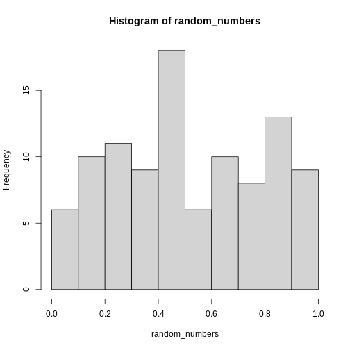

Content from Introduction
Last updated on 2024-07-17 | Edit this page
Estimated time: 12 minutes
Overview
Questions
- How do you write a lesson using R Markdown and sandpaper?
Objectives
- Explain how to use markdown with the new lesson template
- Demonstrate how to include pieces of code, figures, and nested challenge blocks
Introduction
Dette kursus skal sådan set ikke som udgangspunkt køres som et kursus. Det skal danne grundlag for andre kurser.
Content from Reproducible Data Analysis
Last updated on 2024-07-17 | Edit this page
Estimated time: 12 minutes
Overview
Questions
- How do I ensure that my results can be reproduced?
Objectives
- Explain how to use markdown with the new lesson template
- Demonstrate how to include pieces of code, figures, and nested challenge blocks
Introduction
A key concept in the scientific process is reproducibility. We should be able to run the same experiment again, and get, more or less, the same result.
We will not always get the same result, applying the same functions on the same data - some statistical techniques relies on randomness.
An example is k-means, that clusters data based on randomly selected initial centroids.
This also applies to the analysis of data. If we have a collection of measurements of blood pressure from patients before and after they have taken an antihypertensive drug, we might arrive at the result that this specific drug is not working. Doing the same analysis tomorrow, we should reach the same result.
And that can be surprisingly difficult!
There are a lot of pitfalls, ranging from accessibility to incentive structures in academia. But the two areas where R can help us are:
- Software Environment
- Documentation and Metadata
- Complex Workflows
Software Environment
Data analysis is done using specific software, libraries or packages, in a variety of versions. And it happens in an environment on the computer that might not be identical from day to day.
One example of these problems is shown every time we load tidyverse:

This message informs us that there is a filter()
function in the stats packages which is part of the core
R-installation. That function is masked by the filter()
function from the tidyverse´ packagedplyr`.
If our analysis relies on the way the filter() function
works in the tidyverse, we will get errors if
tidyverse is not loaded.
We might also have data stored in memory. Every time we close RStudio, we are asked if we want to save the environment:

This will save all the objects we have in our environment, in order for RStudio to be able to load them into memory when we open RStudio again.
That can be nice and useful. On the other hand we run the risk of
having the wrong version of the
my_data_that_is_ready_for_analysis dataframe lying around
in memory.
In addition we can experience performance problems. Storing a lot of large objects before closing RStudio can take a lot of time. And loading them into memory when opening RStudio will also take a lot of time.
On modern computers we normally have plenty of storage - but it is entirely possible to fill your harddrive with R-environments to the point where your computer crashes.
Documentation and Metadata:
What did we actually do in the analysis? Why did we do it? Why are we coming to the conclusion we have got to?
Three very good questions. Having good metadata, data that describes your data, often makes understanding your data easier. Documenting the individual steps of your analysis, may not seem necessary right now - you know why you are doing what you are doing. But future you - you in three months, or some one else, might not remember or be able to guess (correctly).
Complex Workflows
Doing data analysis in eg Excel, can involve a lot of pointing and clicking.
And in any piece of software, the analysis will normally always involve more than one step. Those steps will have to be done in the correct order. Calculating a mean of some values, depends heavily on whether it happens before or after deleting irrelevant observations.
The solution to all of this!
 {“Artwork by @allison_horst, CC-BY”}
{“Artwork by @allison_horst, CC-BY”}
Working in RMarkdown allows us to collect the text describing our data, what and why we are doing what we do, the code actually doing it, and the results of that code - all in one document.
Open a new file, choose RMarkdown, and give your document a name:

In the code chunks, marked here with a light grey background, contains code, in this case not very advanced code. You can run the entire code chunk by clicking the green arrow on the right. Or by placing your cursor in the line of code you want to run, and pressing ctrl+enter (or command+enter on a Mac).
Outside the code chunks we can add our reasons for actually running
summary on the cars dataframe, and describe
what it contains.
You will see a new button in RStudio: 
Clicking this, will “knit” your document; run each chunck of code, add the output to your document, and combine your code, the results and all your explanatory text to one html-document.
If you do not want an HTMl-document, you can knit to a MicroSoft Word document. Depending on your computer, you can knit directly to a pdf.
Having the entirety of your analysis in an RMarkdown document, and then running it, ensures that the individual steps in the analysis are run in the correct order.
It does not ensure that your documentation of what you do is written - it makes it easy to add it, but you still have to do it.
But what about the environment?
So we force ourself to have the steps in our analysis in the correct order, and we make it easy to add documentation. What about the environment?
Working with RMarkdown also adresses this problem. Every time we
knit our document, RStudio opens a new session of R,
without libraries or objects in memory. This ensures that the analysis
is done in the exact same way each and every time.
This, on the other hand, requires us to add code chunks loading libraries and data to our document.
Content from Reading data from file
Last updated on 2024-07-17 | Edit this page
Estimated time: 12 minutes
Overview
Questions
- How do you read in data from files??
Objectives
- Explain how to read in data from a selection of different data files.
Introduction
The first step of doing dataanalysis, is normally to read in the data.
Data can come from many different sources, and it is practically impossible to cover every possible format. Here we cover some of the more common.
The most important point is that there is a very high probability that at least one package exists that is designed to read a specific weird data format.

Use code!
RStudio makes it simple to load most common data formats. Right-click on the file in RStudio, and choose import. RStudio will then provide an interface for loading the data.

However in general we prefer to have a script or a document, that can be run without us pointing and clicking. So - instead of importing the data in this way, copy the code that RStudio uses to import the data, and paste it into your script or document.
CSV-files
The most basic file type for storing and transferring data. A “simple” textfile, containing tabular data. One line of text for each row of data, each cell in that row, corresponding to a column, separated with a separator, typically a comma.
Many languages use commas as decimal separators. That neccesitates an option for using something else than a comma. Typically a semicolon.
Truly commaseparated files
Use read.csv() (from base-R) or read_csv()
(from readr, included in tidyverse)
We recommend using read_csv().
Semicolon separated files
Use read.csv2() (from base-R) or
read_csv2() (from readr, included in
tidyverse)
We recommend read_csv2()
What they have in common
read_csv and read_csv2 take a lot of
arguments that can control datatypes, handling of headers etc. For most
use, the default options are enough, but if you need to adjust
something, there are plenty of options for that.
An especially useful argument is guess_max
read_csv and read_csv2 tries to guess the
datatypes in the file, and will convert the data accordingly. That will
return a dataframe where date-time data is stored as such. The functions
by default reads the first 1000 rows, and makes a guess on the datatype
based on that.
That can lead to problems if the first 1000 rows of a column contain
numbers, and row 1001 contains text. In that case the entire row will be
coerced to numeric, and the following rows will contain
NA values. Adjust the argument guess_max to
something larger to catch this problem.
To include every row in the guess, add guess_max = Inf -
but be carefull if you have a very large dataset.
Excel-files
Use the readxl package. Excel comes in two variants,
xls and xlsx. read_excel() makes
a qualified quess of the actual type your excel-file is. Should we need
to specify, we can use read_xls() or
read_xlsx().
Workbooks often contains more than one sheet. We can specify which we want to read in:
read_excel(path = "filename", sheet = 2)
Which will read in sheet number 2 from the workbook “filename”.
Read the documentation for details on how to read in specific cells or ranges.
SPSS
SPSS, originally “Statistical Package for the Social Sciences”, later renamed “Statistical Product and Service Solutions” is a proprietary statistical software suite developed by IBM.
Not surprisingly it is widely used in social science.
The package haven supports reading SPSS (Stata and SAS)
files
Use the package to read in spss files:
R
library(haven)
read_spss("filename")
The function returns at tibble.
Note that SPSS uses a variety of different formats.
read_spss() will make a guess of the correct format, but if
problems arise, try using one of the other functions provided in
haven
Stata
Stata is a proprietary statistical software package, used in a multitude of different fields, primarily biomedicine, epidemiololy, sociology and economics.
As mentioned above, hte haven package provides functions
for reading Stata files:
R
library(haven)
read_stata("filename")
The function returns at tibble.
As with SPSS Stata uses a couple of different fileformats, and
read_stata makes a guess as to which format is used. If
problems arise, haven has more specific functions for
reading specific file formats.
SAS
SAS is a proprietary statistical software suite developed by SAS Institute.
As mentioned above the package haven can read
SAS-files:
R
library(haven)
read_sas("filename")
The function returns at tibble.
As with SPSS and Stata, SAS uses a couple of different fileformats,
and read_sas tries to guess the correct format.
If problems arise, haven has more specific functions for
reading specific file formats.
JSON
Not all data come in a nice rectangular format:
CountryUSA |
NameNASA |
Phonenumber
|
|
| White House |
(202)-456-1111 |
||
| Russia | Kremlin | 0107-095-295-9051 | |
| Vatican | The Pope | 011-39-6-6982 | |
There are two locations in the US, and one of them have two phonenumbers. These kinds of structure, where one row contains data with more than one row (etc), are called nested, and are typically stored or distributed in the JSON-format.
JSON can be read using fromJSON() from the
jsonlite library.
R
library(jsonlite)
fromJSON("filename")
Note that you will end up with nested columns - containing lists - which you probably will have to handle afterwards.
Other formats
In general if a piece of software is in widespread enough use that you encounter the weird file-format it uses, someone will have written a package for reading it. Google is your friend here!
Also, if you encounter a really weird dataformat, please send us an example so we can expand our knowledge.
Key Points
- The
readrversion ofread_csv()is preferred - Remember that csv is not always actually separated with commas.
- The
havenpackage contains functions for reading common proprietary file formats. - In general a package will exist for reading strange datatypes. Google is your friend!
- Use code to read in your data
Content from Descriptive Statistics
Last updated on 2024-07-17 | Edit this page
Estimated time: 12 minutes
Overview
Questions
- How can we describe a set of data?
Objectives
- Learn about the most common ways of describing a variable
Introduction
Det kan være en udfordring hvis deltagene ikke ved hvad et gennemsnit er.
En af de overordnede pointer vi gerne vil frem til her, er percentilerne og det kumulative densitetsplot - der danner grundlag for forståelsen af normalfordelingens sammenhæng med statistiske tests.
Descriptive statistic involves summarising or describing a set of data. It usually presents quantitative descriptions in a short form, and helps to simplify large datasaets.
Most descriptive statistical parameters applies to just one variable in our data, and includes:
| Central tendency | Measure of variation | Measure of shape |
|---|---|---|
| Mean | Range | Skewness |
| Median | Quartiles | Kurtosis |
| mode | Inter Quartile Range | |
| Variance | ||
| Standard deviation | ||
| Percentiles |
Central tendency
The easiest way to get summary statistics on data is to use the
summarise function from the tidyverse
package.
R
library(tidyverse)
In the following we are working with the palmerpenguins
dataset:
R
library(palmerpenguins)
Specifically the weight of the penguins, stored in the variable
body_mass_g:
R
penguins$body_mass_g
OUTPUT
[1] 3750 3800 3250 NA 3450 3650 3625 4675 3475 4250 3300 3700 3200 3800 4400
[16] 3700 3450 4500 3325 4200 3400 3600 3800 3950 3800 3800 3550 3200 3150 3950
[31] 3250 3900 3300 3900 3325 4150 3950 3550 3300 4650 3150 3900 3100 4400 3000
[46] 4600 3425 2975 3450 4150 3500 4300 3450 4050 2900 3700 3550 3800 2850 3750
[61] 3150 4400 3600 4050 2850 3950 3350 4100 3050 4450 3600 3900 3550 4150 3700
[76] 4250 3700 3900 3550 4000 3200 4700 3800 4200 3350 3550 3800 3500 3950 3600
[91] 3550 4300 3400 4450 3300 4300 3700 4350 2900 4100 3725 4725 3075 4250 2925
[106] 3550 3750 3900 3175 4775 3825 4600 3200 4275 3900 4075 2900 3775 3350 3325
[121] 3150 3500 3450 3875 3050 4000 3275 4300 3050 4000 3325 3500 3500 4475 3425
[136] 3900 3175 3975 3400 4250 3400 3475 3050 3725 3000 3650 4250 3475 3450 3750
[151] 3700 4000 4500 5700 4450 5700 5400 4550 4800 5200 4400 5150 4650 5550 4650
[166] 5850 4200 5850 4150 6300 4800 5350 5700 5000 4400 5050 5000 5100 4100 5650
[181] 4600 5550 5250 4700 5050 6050 5150 5400 4950 5250 4350 5350 3950 5700 4300
[196] 4750 5550 4900 4200 5400 5100 5300 4850 5300 4400 5000 4900 5050 4300 5000
[211] 4450 5550 4200 5300 4400 5650 4700 5700 4650 5800 4700 5550 4750 5000 5100
[226] 5200 4700 5800 4600 6000 4750 5950 4625 5450 4725 5350 4750 5600 4600 5300
[241] 4875 5550 4950 5400 4750 5650 4850 5200 4925 4875 4625 5250 4850 5600 4975
[256] 5500 4725 5500 4700 5500 4575 5500 5000 5950 4650 5500 4375 5850 4875 6000
[271] 4925 NA 4850 5750 5200 5400 3500 3900 3650 3525 3725 3950 3250 3750 4150
[286] 3700 3800 3775 3700 4050 3575 4050 3300 3700 3450 4400 3600 3400 2900 3800
[301] 3300 4150 3400 3800 3700 4550 3200 4300 3350 4100 3600 3900 3850 4800 2700
[316] 4500 3950 3650 3550 3500 3675 4450 3400 4300 3250 3675 3325 3950 3600 4050
[331] 3350 3450 3250 4050 3800 3525 3950 3650 3650 4000 3400 3775 4100 3775How can we describe these values?
Mean
The mean is the average of all datapoints. We add all values
(excluding the missing values encoded with NA), and divide
with the number of observations:
\[\overline{x} = \frac{1}{N}\sum_1^N x_i\] Where N is the number of observations, and \(x_i\) is the individual observations in the sample \(x\).
The easiest way of getting the mean is using the mean()
function:
R
mean(penguins$body_mass_g, na.rm = TRUE)
OUTPUT
[1] 4201.754A slightly more cumbersome way is using the summarise function from
tidyverse:
R
penguins %>%
summarise(avg_mass = mean(body_mass_g, na.rm = T))
OUTPUT
# A tibble: 1 × 1
avg_mass
<dbl>
1 4202.The advantage will be clear below.
Barring significant outliers, mean is an expression of
position of the data. This is the weight we would expect a random
penguin in our dataset to have.
However, we have three different species of penguins in the dataset, and they have quite different average weights. There is also a significant difference in the average weight for the two sexes.
We will get to that at the end of this segment.
Median
Similarly to the average/mean, the median is an
expression of the location of the data. If we order our data by size,
from the smallest to the largest value, and locate the middle
observation, we get the median. This is the value that half of the
observations is smaller than. And half the observations is larger.
R
penguins %>%
summarise(median = median(body_mass_g, na.rm = T))
OUTPUT
# A tibble: 1 × 1
median
<dbl>
1 4050We can note that the mean is larger that the median. This indicates that the data is skewed, in this case toward the larger penguins.
We can get both median and mean in one
go:
R
penguins %>%
summarise(median = median(body_mass_g, na.rm = T),
mean = mean(body_mass_g, na.rm = TRUE))
OUTPUT
# A tibble: 1 × 2
median mean
<dbl> <dbl>
1 4050 4202.This illustrates for the learners that we can calculate more than one summary statistics in one summarise function.
Mode
Mode is the most common, or frequently occurring, observation. R does not have a build-in function for this, but we can easily find the mode by counting the different observations,and locating the most common one.
We typically do not use this for continous variables. The mode of the
sex variable in this dataset can be found like this:
R
penguins %>%
count(sex) %>%
arrange(desc(n))
OUTPUT
# A tibble: 3 × 2
sex n
<fct> <int>
1 male 168
2 female 165
3 <NA> 11We count the different values in the sex variable, and
arrange the counts in descending order (desc). The mode of
the sex variable is male.
In this specific case, we note that the dataset is pretty evenly balanced regarding the two sexes.
Measures of variance
Knowing where the observations are located is interesting. But how do they vary? How can we describe the variation in the data?
Range
The simplest information about the variation is the range. What is
the smallest and what is the largest value? The range()
function can find it.
Since this returns more than one value, we use the function reframe instead of summarise:
R
penguins %>%
reframe(range = range(body_mass_g, na.rm = T))
OUTPUT
# A tibble: 2 × 1
range
<int>
1 2700
2 6300However it is typically more usefull to extract the two values to separate columns in the output:
R
penguins %>%
summarise(min = min(body_mass_g, na.rm = T),
max = max(body_mass_g, na.rm = T))
OUTPUT
# A tibble: 1 × 2
min max
<int> <int>
1 2700 6300The range informs us of the spread of the observations.
Variance
The observations varies. They are no all located at the mean (or median), but are spread out on both sides of the mean. Can we get a numerical value describing that?
An obvious way would be to calculate the difference between each of the observations and the mean, and then take the average of those differences.
That will give us the average deviation. But we have a problem. The average weight of penguins was 4202 (rounded). Look at two penguins, one weighing 5000, and another weighing 3425. The differences are:
- 5000 - 4202 = 798
- 3425 - 4202 = -777
The sum of those two differences is: -777 + 798 = 21 g. And the average is then 10.5 gram. That is not a good estimate of a variation from the mean of more than 700 gram.
The problem is, that the differences can be both positive and negative, and might cancel each other out.
We solve that problem by squaring the differences, and calculate the mean of those.
Why not just averaging the absolute values? Using the square rather than the absolute difference, weighs the deviations so larger deviations have relatively larger influence on the variance. Squaring results in a continous and differentiable function, which helps in situations where we have to do an optimisation. Also the normal distribution is defined by the variance as defined here, and we would really like to get a connection between what we observe here, and the normal distribution.
The mathematical notation would be:
\[ \sigma^2 = \frac{\sum_{i=1}^N(x_i - \mu)^2}{N} \]
Why are we suddenly using \(\mu\) instead of \(\overline{x}\)? Because this definition uses the population mean. The mean, or average, in the entire population of all penguins everywhere in the universe. But we have not weighed all those penguins.
Instead we will normally look at the sample variance:
\[ s^2 = \frac{\sum_{i=1}^N(x_i - \overline{x})^2}{N-1} \]
Note that we also change the \(\sigma\) to an \(s\).
And again we are not going to do that by hand, but will ask R to do it for us:
R
penguins %>%
summarise(
variance = var(body_mass_g, na.rm = T)
)
OUTPUT
# A tibble: 1 × 1
variance
<dbl>
1 643131.Et godt spørgsmål vil være - hvorfor dividerer vi med N-1 i stedet for N?
Det kaldes for en “Bessel korrektion”. Den ene årsag til at vi gør det er, at godt nok er gennemsnittet i stikprøven et godt estimat for gennemsnittet i populationen. Men det er ikke præcis det samme. Når vi dividerer med et mindre tal, får vi en større værdi for variancen - og dermed et mere konservativt, eller forsigtigt, estimat på variansen.
Den anden årsag handler om frihedsgrader. Hvis vi har tre værdier og et gennemsnit, kan vi vælge hvad de to af værdierne er, og hvad gennemsnittet er. Helt frit. Men den tredie værdi er givet. Den kan vi ikke vælge frit.
Standard deviation
There is a problem with the variance. It is 643131, completely off scale from the actual values. There is also a problem with the unit which is in \(g^2\).
A measurement of the variation of the data would be the standard deviation, simply defined as the square root of the variance:
R
penguins %>%
summarise(
s = sd(body_mass_g, na.rm = T)
)
OUTPUT
# A tibble: 1 × 1
s
<dbl>
1 802.Since the standard deviation occurs in several statistical tests, it is more frequently used that the variance. It is also more intuitively relateable to the mean.
A histogram
A visual illustration of the data can be nice. Often one of the first we make, is a histogram.
A histogram is a plot or graph where we split the range of observations in a number of “buckets”, and count the number of observations in each bucket:
R
penguins %>%
select(body_mass_g) %>%
filter(!is.na(body_mass_g)) %>%
mutate(buckets = cut(body_mass_g, breaks=seq(2500,6500,500))) %>%
group_by(buckets) %>%
summarise(antal = n())
OUTPUT
# A tibble: 8 × 2
buckets antal
<fct> <int>
1 (2.5e+03,3e+03] 11
2 (3e+03,3.5e+03] 67
3 (3.5e+03,4e+03] 92
4 (4e+03,4.5e+03] 57
5 (4.5e+03,5e+03] 54
6 (5e+03,5.5e+03] 33
7 (5.5e+03,6e+03] 26
8 (6e+03,6.5e+03] 2Typically, rather that counting ourself, we leave the work to R, and make a histogram directly:
R
penguins %>%
ggplot((aes(x=body_mass_g))) +
geom_histogram()
OUTPUT
`stat_bin()` using `bins = 30`. Pick better value with `binwidth`.WARNING
Warning: Removed 2 rows containing non-finite outside the scale range
(`stat_bin()`).
By default ggplot chooses 30 bins, typically we should chose a different number:
R
penguins %>%
ggplot((aes(x=body_mass_g))) +
geom_histogram(bins = 25)
WARNING
Warning: Removed 2 rows containing non-finite outside the scale range
(`stat_bin()`).
Or, ideally, set the widths of them, manually:
R
penguins %>%
ggplot((aes(x=body_mass_g))) +
geom_histogram(binwidth = 250) +
ggtitle("Histogram with binwidth = 250 g")
WARNING
Warning: Removed 2 rows containing non-finite outside the scale range
(`stat_bin()`). Or even specify the exact intervals we want, here intervals from 0 to
6500 gram in intervals of 250 gram:
Or even specify the exact intervals we want, here intervals from 0 to
6500 gram in intervals of 250 gram:
R
penguins %>%
ggplot((aes(x=body_mass_g))) +
geom_histogram(breaks = seq(0,6500,250)) +
ggtitle("Histogram with bins in 250 g steps from 0 to 6500 g")
WARNING
Warning: Removed 2 rows containing non-finite outside the scale range
(`stat_bin()`). The histogram provides us with a visual indication of both range, the
variation of the values, and an idea about where the data is
located.
The histogram provides us with a visual indication of both range, the
variation of the values, and an idea about where the data is
located.
Quartiles
The median can be understood as splitting the data in two equally sized parts, where one is characterized by having values smaller than the median and the other as having values larger than the median. It is the value where 50% of the observations are smaller.
Similary we can calculate the value where 25% of the observations are smaller.
That is often called the first quartile, where the median is the 50%, or second quartile. Quartile implies four parts, and the existence of a third or 75% quartile.
We can calcultate those using the quantile function:
R
quantile(penguins$body_mass_g, probs = .25, na.rm = T)
OUTPUT
25%
3550 and
R
quantile(penguins$body_mass_g, probs = .75, na.rm = T)
OUTPUT
75%
4750 probs because if we select a random penguin, we have a 25% chance of selecting a penguin that weighs less than 3550 gram. This ties in to percentiles and qq-plots.
We are often interested in knowing the range in which 50% of the observations fall.
That is used often enough that we have a dedicated function for it:
R
penguins %>%
summarise(iqr = IQR(body_mass_g, na.rm = T))
OUTPUT
# A tibble: 1 × 1
iqr
<dbl>
1 1200The name of the quantile function implies that we might have other quantiles than quartiles. Actually we can calculate any quantile, eg the 2.5% quantile:
R
quantile(penguins$body_mass_g, probs = .025, na.rm = T)
OUTPUT
2.5%
2988.125 The individual quantiles can be interesting in themselves. If we want a visual representation of all quantiles, we can calculate all of them, and plot them.
Instead of doing that by hand, we can use a concept called CDF or cumulative density function:
R
CDF <- ecdf(penguins$body_mass_g)
CDF
OUTPUT
Empirical CDF
Call: ecdf(penguins$body_mass_g)
x[1:94] = 2700, 2850, 2900, ..., 6050, 6300That was not very informative. Lets plot it:
[NOT QUITE DONE!]
R
quantiler <- quantile(penguins$body_mass_g, probs = c(0.25, 0.75), na.rm = TRUE)
ggplot(penguins, aes(body_mass_g)) +
stat_ecdf(geom = "step") +
geom_hline(yintercept = c(0.25,0.5,0.75)) +
geom_vline(xintercept = quantiler)
 den skal vi nok have beskrevet lidt mere.
den skal vi nok have beskrevet lidt mere.
Men pointen er, at vi for enhver værdi kan aflæse ting. Hvor stor en andel af pingvinerne vejer mindre end 3000 g? Vi kan finde 3000 på x-aksen, og aflæse den matchende værdi på y-aksen.
Det svarer også til - hvis vi tager en tilfældig pingvin, hvad er så sandsynligheden for at den vejer mindre end 3000 gram? Eller for at den vejer mere end 5000 gram?
Skewness
Vi bliver nok nødt til at lave et histogram…
We previously saw a histogram of the data, and noted that the observations were skewed to the left, and that the “tail” on the right was longer than on the left. That skewness can be quantised.
There is no function for skewness build into R, but we can get it
from the library e1071
R
library(e1071)
skewness(penguins$body_mass_g, na.rm = T)
OUTPUT
[1] 0.4662117The skewness is positive, indicating that the data are skewed to the left, just as we saw. A negative skewness would indicate that the data skew to the right.
Everything Everywhere All at Once
A lot of these descriptive values can be gotten for every variable in
the dataset using the summary function:
R
summary(penguins)
OUTPUT
species island bill_length_mm bill_depth_mm
Adelie :152 Biscoe :168 Min. :32.10 Min. :13.10
Chinstrap: 68 Dream :124 1st Qu.:39.23 1st Qu.:15.60
Gentoo :124 Torgersen: 52 Median :44.45 Median :17.30
Mean :43.92 Mean :17.15
3rd Qu.:48.50 3rd Qu.:18.70
Max. :59.60 Max. :21.50
NA's :2 NA's :2
flipper_length_mm body_mass_g sex year
Min. :172.0 Min. :2700 female:165 Min. :2007
1st Qu.:190.0 1st Qu.:3550 male :168 1st Qu.:2007
Median :197.0 Median :4050 NA's : 11 Median :2008
Mean :200.9 Mean :4202 Mean :2008
3rd Qu.:213.0 3rd Qu.:4750 3rd Qu.:2009
Max. :231.0 Max. :6300 Max. :2009
NA's :2 NA's :2 Here we get the range, the 1st and 3rd quantiles (and from those the IQR), the median and the mean and, rather useful, the number of missing values in each variable.
We can also get all the descriptive values in one table, by adding more than one summarizing function to the summarise function:
R
penguins %>%
summarise(min = min(body_mass_g, na.rm = T),
max = max(body_mass_g, na.rm = T),
mean = mean(body_mass_g, na.rm = T),
median = median(body_mass_g, na.rm = T),
stddev = sd(body_mass_g, na.rm = T),
var = var(body_mass_g, na.rm = T),
Q1 = quantile(body_mass_g, probs = .25, na.rm = T),
Q3 = quantile(body_mass_g, probs = .75, na.rm = T),
iqr = IQR(body_mass_g, na.rm = T),
skew = skewness(body_mass_g, na.rm = T),
kurtosis = kurtosis(body_mass_g, na.rm = T)
)
OUTPUT
# A tibble: 1 × 11
min max mean median stddev var Q1 Q3 iqr skew kurtosis
<int> <int> <dbl> <dbl> <dbl> <dbl> <dbl> <dbl> <dbl> <dbl> <dbl>
1 2700 6300 4202. 4050 802. 643131. 3550 4750 1200 0.466 -0.740As noted, we have three different species of penguins in the dataset. Their weight varies a lot. If we want to do the summarising on each for the species, we can group the data by species, before summarising:
R
penguins %>%
group_by(species) %>%
summarise(min = min(body_mass_g, na.rm = T),
max = max(body_mass_g, na.rm = T),
mean = mean(body_mass_g, na.rm = T),
median = median(body_mass_g, na.rm = T),
stddev = sd(body_mass_g, na.rm = T)
)
OUTPUT
# A tibble: 3 × 6
species min max mean median stddev
<fct> <int> <int> <dbl> <dbl> <dbl>
1 Adelie 2850 4775 3701. 3700 459.
2 Chinstrap 2700 4800 3733. 3700 384.
3 Gentoo 3950 6300 5076. 5000 504.We have removed some summary statistics in order to get a smaller table.
Boxplots
Finally boxplots offers a way of visualising some of the summary statistics:
R
penguins %>%
ggplot(aes(x=body_mass_g, y = sex)) +
geom_boxplot()
WARNING
Warning: Removed 2 rows containing non-finite outside the scale range
(`stat_boxplot()`).
The boxplot shows us the median (the fat line in the middel of each box), the 1st and 3rd quartiles (the ends of the boxes), and the range, with the whiskers at each end of the boxes, illustrating the minimum and maximum. Any observations, more than 1.5 times the IQR from either the 1st or 3rd quartiles, are deemed as outliers and would be plotted as individual points in the plot.
Content from Table One
Last updated on 2024-07-17 | Edit this page
Estimated time: 12 minutes
Overview
Questions
- How do you make a Table One?
Objectives
- Explain what a Table One is
What is a “Table One”?
Primarily used in medical and epidemiological research, a Table One is typically the first table in any publication using data.
It presents the baseline characteristics of the participants in a study, and provides a concise overview of the relevant demographic and clinical variables.
It typically compares different groups (male~female, treatment~control), to highlight similarities and differences.
OUTPUT
Attaching package: 'table1'OUTPUT
The following objects are masked from 'package:base':
units, units<-|
Treated (N=20) |
Placebo (N=20) |
Overall (N=40) |
|
|---|---|---|---|
| Sex | |||
| Male | 10 (50.0%) | 10 (50.0%) | 20 (50.0%) |
| Female | 10 (50.0%) | 10 (50.0%) | 20 (50.0%) |
| Age (years) | |||
| Mean (SD) | 31.1 (11.2) | 31.5 (10.6) | 31.3 (10.7) |
| Median [Min, Max] | 31.5 [12.7, 49.0] | 31.8 [12.5, 46.7] | 31.5 [12.5, 49.0] |
| Missing | 1 (5.0%) | 0 (0%) | 1 (2.5%) |
| Weight (kg) | |||
| Mean (SD) | 73.8 (14.7) | 68.9 (16.9) | 71.3 (15.8) |
| Median [Min, Max] | 72.8 [54.5, 101] | 66.5 [45.1, 110] | 70.3 [45.1, 110] |
We have 40 participants in a study, split into equal control and treatment groups, and describe the distribution of Sex, Age and Weight in both the two groups, and overall.
A number of packages making it easy to make a Table One exists. Here
we look at the package table1.
The specific way of doing it depends on the data available. If we do not have data on the weight of the participants, we are not able to describe the distribution of their weight.
But the table above was made in this way:
R
library(table1)
table1(~sex + age + weight|treatment, data = dat)
We specify that we would like a table that is a function of
sex, age and wt, and we would
like it split into groups based on the values in the
treatment
It might be instructive to take a look at how the data was prepared. First the data it self:
R
dat <- expand.grid(id=1:10, sex=c("Male", "Female"), treatment=c("Treated", "Placebo"))
dat$age <- runif(nrow(dat), 10, 50)
dat$age[3] <- NA # Add a missing value
dat$weight <- exp(rnorm(nrow(dat), log(70), 0.2))
The interesting part occurs here, where we add labels to the data. That allows us to control the headings in the table:
R
label(dat$sex) <- "Sex"
label(dat$age) <- "Age"
label(dat$treatment) <- "Treatment Group"
label(dat$weight) <- "Weight"
It can be beneficial to add information about units of the data:
R
units(dat$age) <- "years"
units(dat$weight) <- "kg"
More advanced stuff
FLYTTES TIL SEPARAT SIDE?
We might want to be able to precisely control the summary statistics presented in the table.
We can do that by specifying input to the arguments
render.continuous and render.categorical that
control how continuous and categorical data respecetively, is shown in
the table.
The simple way of doing that is by using abbrevieated function names:
R
table1(~sex + age + weight|treatment, data = dat,
render.continuous=c(.="Mean (SD%)", .="Median [Min, Max]",
"Geom. mean (Geo. SD%)"="GMEAN (GSD%)"))
|
Treated (N=20) |
Placebo (N=20) |
Overall (N=40) |
|
|---|---|---|---|
| Sex | |||
| Male | 10 (50.0%) | 10 (50.0%) | 20 (50.0%) |
| Female | 10 (50.0%) | 10 (50.0%) | 20 (50.0%) |
| Age (years) | |||
| Mean (SD%) | 31.1 (11.2%) | 31.5 (10.6%) | 31.3 (10.7%) |
| Median [Min, Max] | 31.5 [12.7, 49.0] | 31.8 [12.5, 46.7] | 31.5 [12.5, 49.0] |
| Geom. mean (Geo. SD%) | 28.9 (1.50%) | 29.5 (1.47%) | 29.3 (1.48%) |
| Missing | 1 (5.0%) | 0 (0%) | 1 (2.5%) |
| Weight (kg) | |||
| Mean (SD%) | 73.8 (14.7%) | 68.9 (16.9%) | 71.3 (15.8%) |
| Median [Min, Max] | 72.8 [54.5, 101] | 66.5 [45.1, 110] | 70.3 [45.1, 110] |
| Geom. mean (Geo. SD%) | 72.4 (1.22%) | 67.1 (1.26%) | 69.7 (1.24%) |
table1 recognizes the following summary statisticis: N,
NMISS, MEAN, SD, CV, GMEAN, GCV, MEDIAN, MIN, MAX, IQR, Q1, Q2, Q3, T1,
T2, FREQ, PCT
Details can be found in the help to the function
stats.default()
Note that they are case-insensitive, and we can write Median or mediAn instead of median.
Also note that we write .="Mean (SD%)" which will be
recognized as the functions mean() and sd(),
but also that the label shown should be “Mean (SD%)”.
If we want to specify the label, we can write
"Geom. mean (Geo. SD%)"="GMEAN (GSD%)"
ØVELSE - ÆNDRE PÅ LABEL ETC.
Very advanced stuff
If we want to specify the summary statistics very precisely, we have to define a function ourself:
R
my_summary <- function(x){
c("","Median" = sprintf("%.3f", median(x, na.rm = TRUE)),
"Variance" = sprintf("%.1f", var(x, na.rm=TRUE))
)
}
table1(~sex + age + weight|treatment, data = dat,
render.continuous = my_summary)
|
Treated (N=20) |
Placebo (N=20) |
Overall (N=40) |
|
|---|---|---|---|
| Sex | |||
| Male | 10 (50.0%) | 10 (50.0%) | 20 (50.0%) |
| Female | 10 (50.0%) | 10 (50.0%) | 20 (50.0%) |
| Age (years) | |||
| Median | 31.524 | 31.769 | 31.524 |
| Variance | 125.2 | 111.7 | 115.2 |
| Missing | 1 (5.0%) | 0 (0%) | 1 (2.5%) |
| Weight (kg) | |||
| Median | 72.847 | 66.455 | 70.337 |
| Variance | 214.8 | 286.3 | 250.2 |
We do not need to use the sprintf() function,
but it is a very neat way of combining text with numeric variables.
ØVELSE - HVAD MON .3f GØR?
What we absolutely need to do is adding the empty string in the beginning.
ØVELSE - HVAD SKER DER HVIS MAN LADER VÆRE?
Summary statistics for categorical data can be adjusted similarly, by
specifying render.categorical.
Primarily of use if there are medical students on the course
Content from Tidy Data
Last updated on 2024-07-17 | Edit this page
Estimated time: 12 minutes
Overview
Questions
- How do you write a lesson using R Markdown and sandpaper?
Objectives
- Explain what tidy data is
Introduction
Most of what we want to do with our data is relatively simple. If the data is structured in the right way.
Working within the paradigm of tidyverse it is
preferable if the data is tidy.
 {“Illustrations from the
Openscapes blog Tidy Data for reproducibility, efficiency, and
collaboration by Julia Lowndes and Allison Horst”}
{“Illustrations from the
Openscapes blog Tidy Data for reproducibility, efficiency, and
collaboration by Julia Lowndes and Allison Horst”}
Tidy data is not the opposite of messy data. Data can be nice and well structured, tidy as in non-messy, without being tidy in the way we understand it in this context.
 {“Illustrations from
the Openscapes blog Tidy Data for reproducibility, efficiency, and
collaboration by Julia Lowndes and Allison Horst”}
{“Illustrations from
the Openscapes blog Tidy Data for reproducibility, efficiency, and
collaboration by Julia Lowndes and Allison Horst”}
Tidy data in the world of R, especially the dialect of R we call tidyverse, are characterized by:
- Each variable is a column; each column is a variable.
- Each observation is a row; each row is an observation.
- Each value is a cell; each cell is a single value.
 {“Illustrations from the
Openscapes blog Tidy Data for reproducibility, efficiency, and
collaboration by Julia Lowndes and Allison Horst”}
{“Illustrations from the
Openscapes blog Tidy Data for reproducibility, efficiency, and
collaboration by Julia Lowndes and Allison Horst”}
This way of structuring our data is useful not only in R, but also in other software packages.
Do’s and dont’s in Excel
Excel is a very useful tool, especially for collecting data.
But even though we are able to do everything we can do in R, in Excel, we will normally do the main part of our work with data in R.
It is therefor a very good idea to think about how we collect and organise the data in Excel, to make our life easier later on.
We have collected some good rules of thumb for structuring data in Excel, based on time-consuming and traumatic experiences wrangling data from Excel to R.
Always * Use one column for one variable * Use one row for one observation * Use one cell for one value * Begin your data in the upper left corner (cell A1) * Use one sheet for each type of data
Never (EVER!) * Modify your raw data - always make a copy before making any change * Merge cells * Use colors for information
Content from Elementary Datamanipulation
Last updated on 2024-07-17 | Edit this page
Estimated time: 12 minutes
Overview
Questions
- How do I manipulate the data to have a specific shape?
Objectives
- Explain how to use markdown with the new lesson template
- Demonstrate how to include pieces of code, figures, and nested challenge blocks
Introduction
Og det er elementær fordi det er de grundlæggende elementer. Så måske et andet ord? det er elementary som i “periodic table of the elements”.
Konceptet er at vi kan manipulere, opsummere og transformere data. filter(): Filtrerer rækker baseret på betingelser. select(): Vælger specifikke kolonner. mutate(): Tilføjer nye kolonner eller ændrer eksisterende. group_by() summarise(): Opsummerer data med aggregerede funktioner. arrange(): Sorterer rækker. join(): Kombinerer flere datasæt.
pipen
Vi taler tidy-dialekten her. Så pipen er vigtig. Vi bruger magrittr pipen, som kan håndtere mere komplekse operationer, og som stadig er meget udbredt når vi finder hjælp på nettet.
Der findes også den native pipe |> som undertiden vil være hurtigere.
dplyr
A collection of functions used for changing and filtering rows and columns.
Det er de basale funktioner, som vi tager i brug når vi har en pæn og tidy dataframe.
select
Used for selecting individual variables - otherwise known as columns.
Here we are selecting the columns species and
island:
R
penguins %>%
select(species, island)
OUTPUT
# A tibble: 344 × 2
species island
<fct> <fct>
1 Adelie Torgersen
2 Adelie Torgersen
3 Adelie Torgersen
4 Adelie Torgersen
5 Adelie Torgersen
6 Adelie Torgersen
7 Adelie Torgersen
8 Adelie Torgersen
9 Adelie Torgersen
10 Adelie Torgersen
# ℹ 334 more rowsFor most purposes select is used for paring down the data to something that is easier to grasp. Having 50 columns can be confusing, especially if we are only interested in two.
Rather than specifying which columns we are interested in, we can specify which columns we are not interested in:
R
penguins %>%
select(-c(bill_length_mm, bill_depth_mm, year))
OUTPUT
# A tibble: 344 × 5
species island flipper_length_mm body_mass_g sex
<fct> <fct> <int> <int> <fct>
1 Adelie Torgersen 181 3750 male
2 Adelie Torgersen 186 3800 female
3 Adelie Torgersen 195 3250 female
4 Adelie Torgersen NA NA <NA>
5 Adelie Torgersen 193 3450 female
6 Adelie Torgersen 190 3650 male
7 Adelie Torgersen 181 3625 female
8 Adelie Torgersen 195 4675 male
9 Adelie Torgersen 193 3475 <NA>
10 Adelie Torgersen 190 4250 <NA>
# ℹ 334 more rowsCollecting the uninteresting columns in a vector, and placing a
- in front, we can de-select the specified columns. In this
case it is easier to specify three columns we are not interested in,
than specifying the six columns that we are interested in.
A range of functions for selecting columns exists:
R
penguins %>%
select(-starts_with("bill"), year)
OUTPUT
# A tibble: 344 × 6
species island flipper_length_mm body_mass_g sex year
<fct> <fct> <int> <int> <fct> <int>
1 Adelie Torgersen 181 3750 male 2007
2 Adelie Torgersen 186 3800 female 2007
3 Adelie Torgersen 195 3250 female 2007
4 Adelie Torgersen NA NA <NA> 2007
5 Adelie Torgersen 193 3450 female 2007
6 Adelie Torgersen 190 3650 male 2007
7 Adelie Torgersen 181 3625 female 2007
8 Adelie Torgersen 195 4675 male 2007
9 Adelie Torgersen 193 3475 <NA> 2007
10 Adelie Torgersen 190 4250 <NA> 2007
# ℹ 334 more rowsMost can be found in the help for the package
tidyselect.
A special way of specifying columns is the :
notation:
R
penguins %>%
select(species:bill_depth_mm)
OUTPUT
# A tibble: 344 × 4
species island bill_length_mm bill_depth_mm
<fct> <fct> <dbl> <dbl>
1 Adelie Torgersen 39.1 18.7
2 Adelie Torgersen 39.5 17.4
3 Adelie Torgersen 40.3 18
4 Adelie Torgersen NA NA
5 Adelie Torgersen 36.7 19.3
6 Adelie Torgersen 39.3 20.6
7 Adelie Torgersen 38.9 17.8
8 Adelie Torgersen 39.2 19.6
9 Adelie Torgersen 34.1 18.1
10 Adelie Torgersen 42 20.2
# ℹ 334 more rowsIt selects all columns from species to
bill_depth_mm (inclusive).
filter()
The filter() function filters data, that is returns only the rows that conform to one or more criteria:
R
penguins %>%
filter(species == "Adelie")
OUTPUT
# A tibble: 152 × 8
species island bill_length_mm bill_depth_mm flipper_length_mm body_mass_g
<fct> <fct> <dbl> <dbl> <int> <int>
1 Adelie Torgersen 39.1 18.7 181 3750
2 Adelie Torgersen 39.5 17.4 186 3800
3 Adelie Torgersen 40.3 18 195 3250
4 Adelie Torgersen NA NA NA NA
5 Adelie Torgersen 36.7 19.3 193 3450
6 Adelie Torgersen 39.3 20.6 190 3650
7 Adelie Torgersen 38.9 17.8 181 3625
8 Adelie Torgersen 39.2 19.6 195 4675
9 Adelie Torgersen 34.1 18.1 193 3475
10 Adelie Torgersen 42 20.2 190 4250
# ℹ 142 more rows
# ℹ 2 more variables: sex <fct>, year <int>The arguments given to filter are predicate functions, functions
returning either TRUE or FALSE. The expression
species == "Adelie" compares the values in the column
species with the value "Adelie", and returns
TRUE for each row where the expression is TRUE. Only the rows
corresponding to a TRUE value, are returned.
We are able to do a multitude of logical comparisons. Is
bill_lenght_mm larger than 40 mm? Simply enter the expression
bill_length > 40. Does species begin with
an “A”? Give filter() the expression str_starts(species, “A”)
R
penguins %>%
filter(str_starts(species, "A"))
OUTPUT
# A tibble: 152 × 8
species island bill_length_mm bill_depth_mm flipper_length_mm body_mass_g
<fct> <fct> <dbl> <dbl> <int> <int>
1 Adelie Torgersen 39.1 18.7 181 3750
2 Adelie Torgersen 39.5 17.4 186 3800
3 Adelie Torgersen 40.3 18 195 3250
4 Adelie Torgersen NA NA NA NA
5 Adelie Torgersen 36.7 19.3 193 3450
6 Adelie Torgersen 39.3 20.6 190 3650
7 Adelie Torgersen 38.9 17.8 181 3625
8 Adelie Torgersen 39.2 19.6 195 4675
9 Adelie Torgersen 34.1 18.1 193 3475
10 Adelie Torgersen 42 20.2 190 4250
# ℹ 142 more rows
# ℹ 2 more variables: sex <fct>, year <int>Any expression that can return a TRUE or FALSE value can be used in a filter(), and multiple expressions can be added:
R
penguins %>%
filter(str_starts(species, "A"),
bill_length_mm > 40 | bill_depth_mm < 20)
OUTPUT
# A tibble: 142 × 8
species island bill_length_mm bill_depth_mm flipper_length_mm body_mass_g
<fct> <fct> <dbl> <dbl> <int> <int>
1 Adelie Torgersen 39.1 18.7 181 3750
2 Adelie Torgersen 39.5 17.4 186 3800
3 Adelie Torgersen 40.3 18 195 3250
4 Adelie Torgersen 36.7 19.3 193 3450
5 Adelie Torgersen 38.9 17.8 181 3625
6 Adelie Torgersen 39.2 19.6 195 4675
7 Adelie Torgersen 34.1 18.1 193 3475
8 Adelie Torgersen 42 20.2 190 4250
9 Adelie Torgersen 37.8 17.1 186 3300
10 Adelie Torgersen 37.8 17.3 180 3700
# ℹ 132 more rows
# ℹ 2 more variables: sex <fct>, year <int>Here we get all the rows, where species starts with an “A”, bill_length_mm is larger than 40, and bill_depth_mm is smaller than 20.
mutate()
The mutate() function allows us to make new columns, based on existing columns:
R
penguins %>%
select(species, bill_length_mm) %>%
mutate(bill_length_inch = bill_length_mm*0.0393701)
OUTPUT
# A tibble: 344 × 3
species bill_length_mm bill_length_inch
<fct> <dbl> <dbl>
1 Adelie 39.1 1.54
2 Adelie 39.5 1.56
3 Adelie 40.3 1.59
4 Adelie NA NA
5 Adelie 36.7 1.44
6 Adelie 39.3 1.55
7 Adelie 38.9 1.53
8 Adelie 39.2 1.54
9 Adelie 34.1 1.34
10 Adelie 42 1.65
# ℹ 334 more rowsThe syntax specifies the name of the new column, and what it should be equal to. If we specify an name that already exists in the dataframe, it will be overwritten. In that way we are able to change an existing column, rather than making a new column.
By default mutate adds new columns to the end of the dataframe. A few
arguments .before and .after allows us to
specify a location of the new column.
summarise() and group_by()
The summarise function allows us to summarise values in columns to a single value:
R
penguins %>%
summarise(average_weight = mean(body_mass_g, na.rm = TRUE))
OUTPUT
# A tibble: 1 × 1
average_weight
<dbl>
1 4202.Note that the result is a dataframe. We get the column with the name that we specified, and a value calculated, here with mean(body_mass_g, na.rm = TRUE).
We are able to calculate more than one summary statistic:
R
penguins %>%
summarise(average_weight = mean(body_mass_g, na.rm = TRUE),
std_dev_weight = sd(body_mass_g, na.rm = TRUE))
OUTPUT
# A tibble: 1 × 2
average_weight std_dev_weight
<dbl> <dbl>
1 4202. 802.Any function that can take a vector (remember that a column in a dataframe is a vector), and return a single value, can be used, including string-functions:
R
penguins %>%
summarise(a_whole_lot_of_islands = paste0(island, collapse = ""))
OUTPUT
# A tibble: 1 × 1
a_whole_lot_of_islands
<chr>
1 TorgersenTorgersenTorgersenTorgersenTorgersenTorgersenTorgersenTorgersenTorge…But try to use more meaningful functions than this example…
summarise combined with filter allows us to
calculate the mean weight of Adelie penguins:
R
penguins %>%
filter(species == "Adelie") %>%
summarise(avg_weight = mean(body_mass_g, na.rm = TRUE))
OUTPUT
# A tibble: 1 × 1
avg_weight
<dbl>
1 3701.If we want to do that calculation for each species of penguin, we can group the dataframe:
R
penguins %>%
group_by(species) %>%
summarise(avg_weight = mean(body_mass_g, na.rm = TRUE))
OUTPUT
# A tibble: 3 × 2
species avg_weight
<fct> <dbl>
1 Adelie 3701.
2 Chinstrap 3733.
3 Gentoo 5076.group_by() will group the dataframe based on the values
specified, in this case “species”, and subsequent operations will then
be done on each group.
group_by allows us to group on more than one variable/column.
R
penguins %>%
group_by(species, sex) %>%
summarise(avg_weight = mean(body_mass_g, na.rm = TRUE))
OUTPUT
`summarise()` has grouped output by 'species'. You can override using the
`.groups` argument.OUTPUT
# A tibble: 8 × 3
# Groups: species [3]
species sex avg_weight
<fct> <fct> <dbl>
1 Adelie female 3369.
2 Adelie male 4043.
3 Adelie <NA> 3540
4 Chinstrap female 3527.
5 Chinstrap male 3939.
6 Gentoo female 4680.
7 Gentoo male 5485.
8 Gentoo <NA> 4588.Note that the tibble (synonymous with dataframe) returned by summarise, is a grouped dataframe, grouped by “species”. Summarise always removes the last level of grouping.
If we do further operations on this dataframe, they will be done on a grouped dataframe. We should therefore always add an “ungroup” function to our pipe:
R
penguins %>%
group_by(species, sex) %>%
summarise(avg_weight = mean(body_mass_g, na.rm = TRUE)) %>%
ungroup()
OUTPUT
`summarise()` has grouped output by 'species'. You can override using the
`.groups` argument.OUTPUT
# A tibble: 8 × 3
species sex avg_weight
<fct> <fct> <dbl>
1 Adelie female 3369.
2 Adelie male 4043.
3 Adelie <NA> 3540
4 Chinstrap female 3527.
5 Chinstrap male 3939.
6 Gentoo female 4680.
7 Gentoo male 5485.
8 Gentoo <NA> 4588.Doing that assures that subsequent operations happens on an ungrouped dataframe.
arrange()
Finally - primarily for presentation purposes, we might want to sort a dataframe.
We do that using the arrange() function:
R
penguins %>%
group_by(species, sex) %>%
summarise(avg_weight = mean(body_mass_g, na.rm = TRUE)) %>%
ungroup() %>%
arrange(avg_weight)
OUTPUT
`summarise()` has grouped output by 'species'. You can override using the
`.groups` argument.OUTPUT
# A tibble: 8 × 3
species sex avg_weight
<fct> <fct> <dbl>
1 Adelie female 3369.
2 Chinstrap female 3527.
3 Adelie <NA> 3540
4 Chinstrap male 3939.
5 Adelie male 4043.
6 Gentoo <NA> 4588.
7 Gentoo female 4680.
8 Gentoo male 5485.We can sort on more than one column/variable, and by default
arrange() sort in ascending order. If we want to sort in
descending order, we would write:
arrange(desc(avg_weight)) using the
desc()-helper function.
Content from Advanced dplyr
Last updated on 2024-07-17 | Edit this page
Estimated time: 12 minutes
Overview
Questions
- How do you write a lesson using R Markdown and sandpaper?
Objectives
- Explain how to use markdown with the new lesson template
- Demonstrate how to include pieces of code, figures, and nested challenge blocks
Introduction
scoped dplyr-funktioner som jo så er pick og across - fordi vi faktisk ikke har scoped verbs længere.
Så reelt de to - i kombi med mutate, filter, select etc.
Og hvad vi ellers har af mere komplekse dplyr funktioner.
Content from tidyr
Last updated on 2024-07-17 | Edit this page
Estimated time: 12 minutes
Overview
Questions
- How do you write a lesson using R Markdown and sandpaper?
Objectives
- Explain how to use markdown with the new lesson template
- Demonstrate how to include pieces of code, figures, and nested challenge blocks
Introduction
pivotering. pivot_longer pivot_wider replace_na Det der skal til for at gøre ting tidy.
unite separate - der er superseeded. Og bør erstattes med de to nye. nesting - måske til en Avanceret? Både nest og unnest fill drop_na
ERROR
Error: <text>:2:0: unexpected end of line
1: tidyr::
^Content from The normal distribution
Last updated on 2024-07-17 | Edit this page
Estimated time: 12 minutes
Overview
Questions
- How do you write a lesson using R Markdown and sandpaper?
Objectives
- Explain how to use markdown with the new lesson template
- Demonstrate how to include pieces of code, figures, and nested challenge blocks
The Normal Distribution
Inline instructor notes can help inform instructors of timing challenges associated with the lessons. They appear in the “Instructor View”
The normal distribution follows this formula:
\[ f(x) = \frac{1}{\sqrt{2\pi\sigma^2}} e^{-\frac{(x-\mu)^2}{2\sigma^2}} \]
It returns the probability density for a given x, population mean and population standard deviation. We can see that it is the “true” mean and standard deviation for the entire population, basically for the entire universe, because they are written using greek letters.
We are often working with the standardized normal distribution, where mean is 0 and the standard deviation is 1.
If we plot that, it looks like this:
 The area under the curve is 1,
equivalent to 100%.
The area under the curve is 1,
equivalent to 100%.
The normal distribution have a lot of nice mathematical properties, some of which are indicated on the graph.
CDF-plottet - så vi har forbindelsen til den deskriptive statistik.
Konceptet med - hvad er sandsynligheden for at se en observation der ligger x standardafvigelser fra middelværdien.
This allows us to calculate the probability of finding a certain value in the data, if the data is normally distributed, if we know the mean and the standard deviation.
R provides us with a set of functions:
pnorm the probability of having a smaller value than. qnorm the value corresponding to a given probability dnorm the probability density of the norma distribution at a given x.
Og det er for den standardiserede normalfordeling N(0,1)
De har mulighed for at returnere værdier for en hvilken som helst normalfordeling med arbitrære middelværdi og standardafvigelse.
An example:
If the height of men are normally distributed, with a mean (mu) = 183 cm, and a standarddeviation of 9.7 cm. How probably is it to find a man that is taller than 2 meters?
Directly:
R
1 - pnorm(200,183,9.7)
OUTPUT
[1] 0.03983729In this example, pnorm returns the probability of an observation smaller than 200, if data is normally distributed with mean 183, and standard deviation 9.7.
The probability of finding any observation is 1. So the probability of finding an observation larger than 200, is 1 minus the probability of finding an observation smaller than 200.
Manually we could calculate the distance from 200 to 183 = 17. And divide that with the standard deviation 9.7: 17/9.7 = 1.752577.
R
1 - pnorm(1.752577)
OUTPUT
[1] 0.03983732How many men are between 170 and 190 cm tall? Lidt før dette punkt skal vi videre til næste lesson.
Og efter clt videre til hypotesetests
CLT
CLT fører til at vi kan betragte middelværdien for vores data som normalfordelt. selv når disse data ikke er normalfordelte.
I praksis bruger vi t-fordelingen, der ser lidt anderledes ud - vi har nemlig ikke kendskab til hele populationens sande middelværdi og varians. t-fordelingen har tykkere haler, der giver os større sikkerhed for vores konklusioner.
Hvad gør vi så? Hvis vi tager i princippet uendeligt mange stikprøver, samples, og beregner middelværdierne, så vil disse middelværdier følge normalfordelingen.
hvis vi fremstiller linealer, og har en tese om at de er præcist 20 cm lange, som de skal være. det er mu
Nu tager vi en stikprøve på størrelsen “n” fra produktionen. Måler dem, og beregner gennemsnittet.
Måler vi præcist nok, vil det gennemsnit formentlig adskille sig fra 20 cm. Det gennemsnit er X-bar.
I dette tilfælde antager vi at vi kender standardafvigelsen for vores produktion.
Hvis vi normerer alle vores målinger, så gennemsnittet er 0. Det gør vi ved at trække gennemsnittet fra alle målinger. Og så standardafvigelsen er 1. Det gør vi ved at dividere alle målinger med standardafvigelsen.
Så vil gennemsnittet af vores stikprøve, fordi CLT, følge en normalfordeling. Og vi kan se hvor det gennemsnit, denne z-score, placerer sig på den sande normalfordeling.
og ud fra de matematiske egenskaber fra normalfordelingen, kan vi se hvor underlig den middelværdi vi måler, er.
og det er stadig ikke en specielt god forklaring…
Fordelingsfunktionerne i R.
De hyppigst forekommende fordelinger har hver deres sæt af funktioner.
rnorm
I samme familie finder vi runif, rbeta og en del andre:
R
rnorm(5, mean = 0, sd = 1 )
OUTPUT
[1] 0.3059585 -0.5514241 0.1571381 -0.5920326 0.3094804Den returnerer (her) fem tilfældige værdier fra en normalfordeling med (her) middelværdi 0 og standardafvigelse 1.
Er ting normalfordelte?
Normalfordelingen kaldes normal fordi Karl Pearson og Francis Galton i det 19. århundrede observerede at det var en statistisk fordeling der forklarede rigtig mange fænomener i befolkningsdata. Højde, vægt, blodtryk, intelligenskvotienter mv. Faktisk var det den der forklarede flest (af de ting de nu undersøgte).
Og så er det i øvrigt den fordeling som middelværdier af stikprøver vil tilnærme sig jf. den centrale grænseværdisætning.
Så den er normal fordi det er normen, den hyppigst forekommende. Ikke at forveksle med en mere løs, dagligsprogs, normativ (pun intended) anvendelse af ordet norm. Normalen i en statistisk sammenhæng er ganske enkelt den hyppigst forekommende observation.
Det i statistisk forstand normale, normen, er at have brune øjne (>50% af klodens befolkning har brune øjne). Det betyder ikke at der er noget galt med at have blå øjne.
Og rigtig mange ting er ret tæt på at være normalfordelte. Men i virkeligheden er der ikke mange fænomener der følger normalfordelingen fuldstændig. Et eksempel:
Serum (en del af blod) Molybdæn (der er et essentielt sporstof i human fysiologi), har en middelværdi på 1.55 og en standardafvigelse på 0.74 hos normale, raske mennesker.
Rifai, N. (2017). Tietz textbook of clinical chemistry and molecular diagnostics : Tietz textbook of clinical chemistry and molecular diagnostics - e-book. Elsevier - Health Sciences Division.
Hvis vi antager at serum-Molybdæn er normalfordelt i populationen, kan vi beregne hvor stor en andel af den normale raske befolkning i danmark, der har en Molybdæn-koncentration under 0:
R
pnorm(0, mean = 1.55, sd = 0.74)
OUTPUT
[1] 0.01810352Hvilket vil sige at vi forventer at lidt over 100.000 danskere har et negativt indhold af Molybdæn i blodet. Hvilket er fysisk umuligt. Hvorfor går det så godt alligevel? Fordi serum molybdæn er normalfordelt nok.
Content from Testing for normality
Last updated on 2024-07-17 | Edit this page
Estimated time: 12 minutes
Overview
Questions
- How do you write a lesson using R Markdown and sandpaper?
Objectives
- Explain how to use markdown with the new lesson template
- Demonstrate how to include pieces of code, figures, and nested challenge blocks
R
library(tidyverse)
library(palmerpenguins)
How to test if our data is normally distributed?
Common question - is my data normally distributed?
What does it mean that it is normally distributed? It means that the distribution of our data has the same properties as the normal distribution.
Let us get some data that we can test:
R
normal_test_data <- penguins %>%
filter(species == "Chinstrap") %>%
select(bill_depth_mm)
Mean and median
One of the properties of the normal distribution is that the mean and median of the data is equal. Let us look at the penguins:
R
summary(normal_test_data)
OUTPUT
bill_depth_mm
Min. :16.40
1st Qu.:17.50
Median :18.45
Mean :18.42
3rd Qu.:19.40
Max. :20.80 This is actually pretty close! But equality between median and mean is a neccesary, not a sufficient condition.
What next. A histogram of the data should look normal. Let us take a closer look at bill_depth_mm where mean and median are closest:
R
normal_test_data %>%
ggplot(aes(x=bill_depth_mm)) +
geom_histogram()
OUTPUT
`stat_bin()` using `bins = 30`. Pick better value with `binwidth`.This does not really look like a normal distribution. The fact that mean and median are almost identical was not a sufficient criterium for normalcy.
The shape of a histogram is heavily dependent on the bins we choose. A better way of visualizing often density-plots:
R
normal_test_data %>%
ggplot(aes(x=bill_depth_mm)) +
geom_density()
We can think of this as a histogram with infinitely small bins.
This does look more normal - but it would be nice to be able to quantize the degree of normalcy.
Percentiels and QQ-plots as a test
The properties of the normal distribution informs us that 50% of the observations in the data are smaller than the mean (and conversely 50% are larger). We alson know that 50% of the observations should be in the interquartile range. And what we also know is that 2.5% of the observations (the 2.5 percentile) are smaller than the mean minus 1.96 times the standard deviation.
Actually we can calculate exactly which percentile a given observation is in. And we we can calculate which value a given percentile should have.
Comparing those gives us an indication of how well the data conforms to a normal distribution.
Rather than doing that by hand, we can get R to do it for us in a nice graphical way:
R
normal_test_data %>%
ggplot(aes(sample = bill_depth_mm)) +
geom_qq() +
geom_qq_line()
The geom_qq function calculate and plots which
percentile an observation is in.
Rather than being given percentiles, we are given the value that the percentile corresponds to if we calculate it as number of standard deviations from the mean.
This results in plots that are more comparable.
geom_qq_line plots the line corresponding til the values
the percentiles should have, if the data was normally distributed.
A common theme is that the midle of the data falls relatively close to the line, and that there are deviations from the line at both ends. In this case the deviations are largish, indicating that the data is not normally distributed.
Callout
We have two tails in the qq-plot, a left and a right. And they can be either above or below the qq-line.
That results in four different cases, that informs us about what is wrong with the data - in regards to how it deviates from normalcy.
| Left tail | Right tail | Name | What |
|---|---|---|---|
| Above | Below | Leptokurtic | Heavier tails - ie. more extreme values. Higher kurtosis |
| Below | Above | Platykurtic | Lighter tails - ie. fewer extreme values. Lower kurtosis |
| Above | Above | Right skewed | A tail that stretches to the higher values - the extreme values are larger. |
| Below | Below | Left skewed | A tail that stretches to the lower values - the extreme values are smaller. |
OUTPUT
Attaching package: 'gridExtra'OUTPUT
The following object is masked from 'package:dplyr':
combineJa. kurtosis og skewness. Jo tættere skewness kommer på 0, og kurtosis minus 3 på 0, jo tættere på normalfordelt er data.
R i sig selv kan ikke beregne det. Men det kan pakken e1071
R
library(e1071)
test <- rnorm(1000)
Skewness:
R
skewness(test)
OUTPUT
[1] 0.02857772kurtosis
R
kurtosis(test)
OUTPUT
[1] -0.02368209Bemærk at vores test-vektor er ret normal fordelt. Men ingen af parametrene er lig 0.
Andre tests: Shapiro-Wilk
R
shapiro.test(test)
OUTPUT
Shapiro-Wilk normality test
data: test
W = 0.99773, p-value = 0.1877nul-hypotesen er her at data er normalfordelte. Hvis vi afviser null-hypotesen,vil det i dette tilfælde, være forkert i ca. 94% af tilfældene.
Testen er særligt godt til små stikprøver (<50, nogen siger den er ok op op til <2000)
Det er, vist nok, principielt et mål for den lineære korrelation mellem data og normalfordelte kvantiler - altså det vi ser i qq-plottet.
Kolmogorov-Smirnov
vi skal specificere at det er normalfordelingen vi tester imod (“pnorm”) - den kan nemlig teste for andre fordelinger også.
R
ks.test(test, "pnorm", mean = mean(test), sd = sd(test))
OUTPUT
Asymptotic one-sample Kolmogorov-Smirnov test
data: test
D = 0.026656, p-value = 0.4761
alternative hypothesis: two-sidedVær forsigtig. Den forudsætter at vi kender “den sande” middelværdi og standardafvigelse, i stedet for som i dette eksempel at estimere dem fra vores stikprøve.
NULL-hypotesen er også her at data er normalfordelte, p-værdien er her 0.99, og vi kan derfor ikke afvise null-hypotesen.
Liliefors test
Den er en variation af ks-testen, der er designet specifikt til at teste normalitet. Og forudsætter ikke at vi på forhånd kender middelværdi og standardafvigelse.
R
library(nortest)
lillie.test(test)
OUTPUT
Lilliefors (Kolmogorov-Smirnov) normality test
data: test
D = 0.026656, p-value = 0.09102Samme null-hypotese som før. Men læg igen mærke til at selvom data er designet til at være normalfordelte, så er p-værdien ikke 1.
Content from which-distribution
Last updated on 2024-07-17 | Edit this page
Estimated time: 12 minutes
Overview
Questions
- How do you write a lesson using R Markdown and sandpaper?
Objectives
- Explain how to use markdown with the new lesson template
- Demonstrate how to include pieces of code, figures, and nested challenge blocks
Introduction
Certain statistical tests and procedures requires that our data is normally distributed. And we have to use other tests if it is not normally distributed. In that case we need to figure out which statistical distribution best fit our data.
We could find that out by guessing at a distribution, fit our data to it, and evaluate how good the fit is.
Or we can figure out a way to test at lot of different distributions in one go.
The package gamlss and its plugin packages
gamlss.dist and gamlss.add can do just
that:
R
library(tidyverse)
library(gamlss)
library(gamlss.dist)
library(gamlss.add)
gamlss has the advantage of implementing a lot
of different statistical distributions.
Let us look at some data. The faithful data set contains
272 observations of the Old Faithful geyser in Yellowstone National Park
in USA. We only look at eruptions that lasts longer than 3 seconds:
R
faithful %>%
filter(eruptions > 3) %>%
ggplot(aes(eruptions)) +
geom_histogram(bins=20)
 This does not look very normally distributed, and the fact that
eruptions can not have negative lengths in it self, indicates that the
data is probably not normally distributed. This is because the normal
distribution would give us non-zero probabilities for negative
eruption-lengths.
This does not look very normally distributed, and the fact that
eruptions can not have negative lengths in it self, indicates that the
data is probably not normally distributed. This is because the normal
distribution would give us non-zero probabilities for negative
eruption-lengths.
So - which statistical distribution best matches our data?
We begin by preparing the data.:
R
eruption_example <- faithful %>%
filter(eruptions > 3) %>%
select(eruptions)
The function fitDist() from gamlss will fit
the data to a selection of different statistical distributions,
calculate a measure of the goodness of fit, and return the best fit (and
information on all the others). Rather than testing against all 97
different distributions supported by gamlss, we can specify
only a selection, in this case realplus, that only includes
the 23 distributions that are defined for positive, real numbers:
R
fit <- fitDist(eruptions, type = "realplus", data = eruption_example)
OUTPUT
| | | 0% | |=== | 4% | |====== | 9% | |========= | 13% | |============ | 17% | |=============== | 22% | |================== | 26% | |===================== | 30% | |======================== | 35% | |=========================== | 39% | |============================== | 43% | |================================= | 48% | |===================================== | 52% | |======================================== | 57% | |=========================================== | 61% | |============================================== | 65% | |================================================= | 70% | |==================================================== | 74% | |======================================================= | 78% | |========================================================== | 83%Error in solve.default(oout$hessian) :
Lapack routine dgesv: system is exactly singular: U[4,4] = 0
| |============================================================= | 87%Error in solve.default(oout$hessian) :
Lapack routine dgesv: system is exactly singular: U[4,4] = 0
| |================================================================ | 91% | |=================================================================== | 96% | |======================================================================| 100%If you do this yourself, you will notice a lot of error-messages. It is not possible to fit this particular data to all the distributions, and the ones where the fit fails (enough), we will get an error message.
The output from fitDist() will return the best fit:
R
fit
OUTPUT
Family: c("WEI2", "Weibull type 2")
Fitting method: "nlminb"
Call: gamlssML(formula = y, family = DIST[i])
Mu Coefficients:
[1] -18.69
Sigma Coefficients:
[1] 2.524
Degrees of Freedom for the fit: 2 Residual Deg. of Freedom 173
Global Deviance: 175.245
AIC: 179.245
SBC: 185.574 We are told that the statistical distribution that best fits the data
is Weibull type 2 and that the AIC-measurement of goodness
of fit is 170.245.
Callout
Is that a good fit? That is a good question. It strongly depends on
the values in the dataset. In this dataset, the length of the eruptions
are measured in seconds. If we choose to measure that length in another
unit, eg wiblies defined as two seconds - equivalent to
dividing the values with 2, the distribution should not change. But the
AIC will change.
We can use the AIC to decide that one distribution fits the data better than another, but not to conclude that that distribution is the correct one.
The fit object containing the output of the
fitDist() function contains quite a bit more.
If we start by getting the errors out of the way,
fit$failed returns the two distributions that failed enough
to cause errors:
R
fit$failed
OUTPUT
[[1]]
[1] "GIG"
[[2]]
[1] "LNO"As mentioned fitDist() fitted the data to 23 different
distributions. We can inspect the rest, and their associated AIC-values
like this:
R
fit$fits
OUTPUT
WEI2 WEI3 WEI GG BCPEo BCPE BCCGo BCCG
179.2449 179.2449 179.2449 181.1349 181.4953 181.4953 183.1245 183.1245
GB2 BCT BCTo exGAUS GA LOGNO2 LOGNO IG
183.1354 185.1245 185.1245 190.2994 194.4665 198.3047 198.3047 198.3558
IGAMMA EXP GP PARETO2o PARETO2
202.6759 861.8066 863.8067 863.8079 863.8081 Here we get WEI2 first, with an AIC of 179.2449, but we
can see that WEI3 and WEI1 have almost exactly
the same AIC. Not that surprising if we guess that
Weibull type 3 is probably rather similar to
Weibull type 2.
The difference in AIC for the first two distributions tested is very
small. Is it large enough for us to think that WEI2 is
significantly better than WEI3?
No. As a general rule of thumb, the difference between the AIC of two distributions have to be larger than 2 for us to see a significant difference.
We can get more details using the summary()
function:
R
summary(fit)
OUTPUT
*******************************************************************
Family: c("WEI2", "Weibull type 2")
Call: gamlssML(formula = y, family = DIST[i])
Fitting method: "nlminb"
Coefficient(s):
Estimate Std. Error t value Pr(>|t|)
eta.mu -18.6934274 1.1306427 -16.5334 < 2.22e-16 ***
eta.sigma 2.5242093 0.0589965 42.7858 < 2.22e-16 ***
---
Signif. codes: 0 '***' 0.001 '**' 0.01 '*' 0.05 '.' 0.1 ' ' 1
Degrees of Freedom for the fit: 2 Residual Deg. of Freedom 173
Global Deviance: 175.245
AIC: 179.245
SBC: 185.574 And we can get at graphical description as well:
R
plot(fit)

OUTPUT
******************************************************************
Summary of the Quantile Residuals
mean = -0.001205749
variance = 0.9953007
coef. of skewness = 0.09022876
coef. of kurtosis = 2.529951
Filliben correlation coefficient = 0.9976953
******************************************************************Hvordan med de andre muligheder?
Dem kan vi også få:
R
fitte <- gamlss(eruptions ~ 1, family = LOGNO, data = test)
ERROR
Error in eval(expr, envir, enclos): object 'test' not foundR
plot(fitte)
ERROR
Error in eval(expr, envir, enclos): object 'fitte' not foundOg det var så de fordelinger der er definerede for reelle, positive tal. Vi går efter den mindste “deviance” - afvigelsen fra idealet. Bemærk at jo flere datapunkter vi har, jo større bliver tallene. Det bedste fit er dog stadig det med den laveste værdi.
“realline” dækker kontinuerte fordelingsfunktioner på hele den reelle tallinie
“realplus” dækker kontinuerte fordelingsfunktioner på den positive, reelle tallinie
“realAll” har alle kontinuerte fordelingsfunktioner på hele den relle tallinie, det vil sige alt der er omfattet af “realline” og “realplus”
“real0to1” de kontinuerte fordelingsfunktioner der er defineret for værdier mellem 0 og 1.
“counts” fordelingsfunktioner for tælletal
“binom” fordelingsfunktioner for binomiale data.
Der er mange. Læs mere om dem i dokumentationen, særligt appendix A.
Hvordan med de andre fordelinger?
Inde bagved er fitDist i virkeligheden gentagne kald til
den samme funktion. Det afsløres i outputtet:
Call: gamlssML(formula = y, family = DIST[i])
Så vil vi gerne have estimaterne fra de andre funktioner, kan vi få
dem ved at lave samme kald - men med en anden family:
R
nyt_fit <- gamlssML(formula = y, family = "GG")
ERROR
Error in eval(predvars, data, env): object 'y' not foundR
LOGNO2
OUTPUT
function (mu.link ="log", sigma.link="log")
{
mstats <- checklink("mu.link", "LOGNO2", substitute(mu.link), c("inverse", "log", "identity"))
dstats <- checklink("sigma.link", "LOGNO2", substitute(sigma.link), c("inverse", "log", "identity"))
structure(
list(family = c("LOGNO2", "Log Normal 2"),
parameters = list(mu=TRUE,sigma=TRUE),
nopar = 2,
type = "Continuous",
mu.link = as.character(substitute(mu.link)),
sigma.link = as.character(substitute(sigma.link)),
mu.linkfun = mstats$linkfun,
sigma.linkfun = dstats$linkfun,
mu.linkinv = mstats$linkinv,
sigma.linkinv = dstats$linkinv,
mu.dr = mstats$mu.eta,
sigma.dr = dstats$mu.eta,
dldm = function(y, mu, sigma){
dldm <- (1/sigma^2)*(log(y)-log(mu))/mu #(log(y)-log(mu))/((sigma^2)*mu)
dldm
},
d2ldm2 = function(mu, sigma) -1/((sigma^2)*(mu^2)),
dldd = function(y,mu,sigma) {
dldd <- (1/(sigma^3))*((log(y)-log(mu))^2-sigma^2)
dldd},
d2ldd2 = function(sigma) -(2/(sigma^2)),
d2ldmdd = function(y) rep(0,length(y)),
G.dev.incr = function(y,mu,sigma,...) -2*dLOGNO2(y,mu,sigma,log=TRUE),
rqres = expression(rqres(pfun="pLOGNO2", type="Continuous", y=y, mu=mu, sigma=sigma)),
mu.initial = expression({ mu <- exp((log(y)+mean(log(y)))/2 ) }),
sigma.initial = expression({sigma <- rep(sd(log(y)),length(y))}),
mu.valid = function(mu) all (mu > 0) ,
sigma.valid = function(sigma) all(sigma > 0),
y.valid = function(y) all(y>0)
),
class = c("gamlss.family","family")
)
}
<bytecode: 0x559880eb1e90>
<environment: namespace:gamlss.dist>R
nyt_fit
ERROR
Error in eval(expr, envir, enclos): object 'nyt_fit' not foundResultatet kan behandles ganske som tidligere.
R
test <- as_tibble(faithful) %>%
select(eruptions) %>%
filter(eruptions > 3)
faithful$eruptions
OUTPUT
[1] 3.600 1.800 3.333 2.283 4.533 2.883 4.700 3.600 1.950 4.350 1.833 3.917
[13] 4.200 1.750 4.700 2.167 1.750 4.800 1.600 4.250 1.800 1.750 3.450 3.067
[25] 4.533 3.600 1.967 4.083 3.850 4.433 4.300 4.467 3.367 4.033 3.833 2.017
[37] 1.867 4.833 1.833 4.783 4.350 1.883 4.567 1.750 4.533 3.317 3.833 2.100
[49] 4.633 2.000 4.800 4.716 1.833 4.833 1.733 4.883 3.717 1.667 4.567 4.317
[61] 2.233 4.500 1.750 4.800 1.817 4.400 4.167 4.700 2.067 4.700 4.033 1.967
[73] 4.500 4.000 1.983 5.067 2.017 4.567 3.883 3.600 4.133 4.333 4.100 2.633
[85] 4.067 4.933 3.950 4.517 2.167 4.000 2.200 4.333 1.867 4.817 1.833 4.300
[97] 4.667 3.750 1.867 4.900 2.483 4.367 2.100 4.500 4.050 1.867 4.700 1.783
[109] 4.850 3.683 4.733 2.300 4.900 4.417 1.700 4.633 2.317 4.600 1.817 4.417
[121] 2.617 4.067 4.250 1.967 4.600 3.767 1.917 4.500 2.267 4.650 1.867 4.167
[133] 2.800 4.333 1.833 4.383 1.883 4.933 2.033 3.733 4.233 2.233 4.533 4.817
[145] 4.333 1.983 4.633 2.017 5.100 1.800 5.033 4.000 2.400 4.600 3.567 4.000
[157] 4.500 4.083 1.800 3.967 2.200 4.150 2.000 3.833 3.500 4.583 2.367 5.000
[169] 1.933 4.617 1.917 2.083 4.583 3.333 4.167 4.333 4.500 2.417 4.000 4.167
[181] 1.883 4.583 4.250 3.767 2.033 4.433 4.083 1.833 4.417 2.183 4.800 1.833
[193] 4.800 4.100 3.966 4.233 3.500 4.366 2.250 4.667 2.100 4.350 4.133 1.867
[205] 4.600 1.783 4.367 3.850 1.933 4.500 2.383 4.700 1.867 3.833 3.417 4.233
[217] 2.400 4.800 2.000 4.150 1.867 4.267 1.750 4.483 4.000 4.117 4.083 4.267
[229] 3.917 4.550 4.083 2.417 4.183 2.217 4.450 1.883 1.850 4.283 3.950 2.333
[241] 4.150 2.350 4.933 2.900 4.583 3.833 2.083 4.367 2.133 4.350 2.200 4.450
[253] 3.567 4.500 4.150 3.817 3.917 4.450 2.000 4.283 4.767 4.533 1.850 4.250
[265] 1.983 2.250 4.750 4.117 2.150 4.417 1.817 4.467R
gamlss(eruptions ~ 1, family = LOGNO2, data = eruption_example) %>% plot()
OUTPUT
GAMLSS-RS iteration 1: Global Deviance = 194.3047
GAMLSS-RS iteration 2: Global Deviance = 194.3047 
OUTPUT
******************************************************************
Summary of the Quantile Residuals
mean = -2.44886e-16
variance = 1.005747
coef. of skewness = -0.7063289
coef. of kurtosis = 3.179548
Filliben correlation coefficient = 0.9814924
******************************************************************Content from notes
Last updated on 2024-07-17 | Edit this page
Estimated time: 12 minutes
Overview
Questions
- How do you write a lesson using R Markdown and sandpaper?
Objectives
- Explain how to use markdown with the new lesson template
- Demonstrate how to include pieces of code, figures, and nested challenge blocks
Introduction
Inline instructor notes can help inform instructors of timing challenges associated with the lessons. They appear in the “Instructor View”
OUTPUT
[1] "This new lesson looks good"R
library(tidyverse)
OUTPUT
── Attaching core tidyverse packages ──────────────────────── tidyverse 2.0.0 ──
✔ dplyr 1.1.4 ✔ readr 2.1.5
✔ forcats 1.0.0 ✔ stringr 1.5.1
✔ ggplot2 3.5.1 ✔ tibble 3.2.1
✔ lubridate 1.9.3 ✔ tidyr 1.3.1
✔ purrr 1.0.2
── Conflicts ────────────────────────────────────────── tidyverse_conflicts() ──
✖ dplyr::filter() masks stats::filter()
✖ dplyr::lag() masks stats::lag()
ℹ Use the conflicted package (<http://conflicted.r-lib.org/>) to force all conflicts to become errorsR
# download.file("https://raw.githubusercontent.com/KUBDatalab/R-PUFF/main/data/FEV.csv", "data/fev.csv", mode = "wb")
Data
Ingen har givet os data. Så her er noget data på lungevolumen hos børn/unge i alderen 3-19, både rygere og ikke rygere, og af begge køn. Højden har vi også. Højde er i tommer. Volumen tror vi nok er i liter.
R
fev <- read_csv("data/fev.csv")
summary(fev)
scatterplot analysis
Vi ved ikke helt hvad en “scatterplot analysis” er. Men her er et scatterplot:
R
fev %>% ggplot(aes(x=Hgt, y = FEV)) +
geom_point()
Det får os til at tro at der måske er en lineær sammenhæng mellem højde og lungevolumen.
En ret linie
ggplot kan lave det direkte. Men husk at sætte “method” i geom_smooth:
R
fev %>% ggplot(aes(x=Hgt, y = FEV)) +
geom_point() +
geom_smooth(method = "lm")
Sådan en linie har en ligning
\[y = ax + b\]
Or:
\[FEV = aHgt + b\] a er hældningen (slope). b is the intercept between the line and the y-axis.
R can find slope and intercept for us:
R
model <- lm(FEV ~ Hgt, data = fev)
model
Read the formula as: FEV is a function of Hgt. Hgt is the independent variabel. FEV the dependent. But this is not a statistics course, you can read about that in your textbook. Intercept is -5.433. Try to guess what value the slope has.
What else:
R
summary(model)
Here we get the p-values of the estimates of intercept and slope, handily coded with *** to indicate different levels of significance \(\alpha\).
We also get a \(R^2\) value describing the propotion of the variability of the data described by the model.
In general it is a good idea to take a look at the residuals:
R
hist(model$residuals)
The residuals should be normal distributed (one of the assumptions of the linear regression, but we assume that has been covered in the textbook).
Also take a look at the actual residuals, comparing the predicted values with the residuals:
R
plot(fitted(model), model$residuals)
If there is a pattern in the residuals it is an indication that there is more signal in the data than we found with the model. Here it looks like there is something happening in the higher end of FEV - the dispersion of the values is qualitatively different in the two ends of the fit.
Maybe that dispersion at the end is due to Sex?
We can make the previous plot, just colored by Sex (Sex is recorded
as 0’s and 1’s). We need to coeerce Sex to a categorical variable using
factor():
R
fev %>% ggplot(aes(x=Hgt, y = FEV, color = factor(Sex))) +
geom_point() +
geom_smooth(method = "lm")
The dispersion is probably not related to Sex. We almost only have boys/men with a height above ~70 inches. And we see a large variability amongst them, i overensstemmelse med den større variabilitet vi ser blandt mænd i snart sagt alle sammenhænge.
might it be age - multiple regression!
Maybe FEV is dependent on both Height and Age?
R
model2 <- lm(FEV ~Age + Hgt , data = fev)
model2 %>% summary()
In the simpler model Adjusted R-squared was 0.7533. This larger model represents a slight improvement.
\[FEV = \beta_2Age + \beta_1Hgt + \beta_0\]
What if we only look at the girls/women?
R
lm(FEV ~Age + Hgt , data = fev %>% filter(Sex == 0)) %>% summary()
Adjusted \(R^2\) is worse!
and for the men/boys?
R
lm(FEV ~Age + Hgt , data = fev %>% filter(Sex == 1)) %>% summary()
It actually gets better.
Can we make a model where we bake in Sex?
Now it get complicated enough that we really need to think about how to explain it…
It might be easier after looking at the result
R
lm(FEV ~ Age:factor(Sex) + Hgt:factor(Sex) + Age*Hgt, data = fev)
The intercept is what it is.
For each unit increase in Age, FEV decreases by 0.334. For each unit increase in Hgt FEV increases by 0.0534. factor(Sex)1:Hgt tells us, that boys/men “experience” a decrease in FEV of 0.00292 for each unit increase of Height. Or: Girls and boys get an increase of FEV of 0.0534 for each inch of height. But FEV for boys is corrected downwards by 0.00292.
Similar with Age. Girls and boys decrease their FEV with 0.334 for each year. But boys get an “compensatory” increase of 0.0303.
Age:Hgt is a bit more complicated. We multiply the age and height of both sexes - a unit increase in that value increses FEV with 0.00605.
Does the final bit make sense? Physiologically? No idea.
Looking closer at the model result:
R
lm(FEV ~ Age:factor(Sex) + Hgt:factor(Sex) + Age*Hgt, data = fev) %>% summary()
The model is now so complicated that we see elements that are not significant. Maybe the model is too complicated.
correlation matrix
Pairwise correlations between the variables:
R
cor(fev)
The diagonal is very uninteresting.
We can get the pairwise \(R^2\) directly:
R
cor(fev)^2
We can visualise it:
R
library(corrplot)
corrplot(cor(fev), bg = "black")
We may need to play around with background color to even be able to see the small values.
We think this function gives a nicer plot:
R
library(GGally)
ggpairs(fev, progress = F)
non-linear model
We have already seen a non-linear model!
R
lm(FEV ~ Age:factor(Sex) + Hgt:factor(Sex) + Age*Hgt, data = fev)
We multiply Age and Hgt. That is not linear!
lm can still be used. A non-linear model is simply a linear model with non-linear dependent variables.
R
lm(FEV ~ Age + Hgt + Sex, data = fev)
If we want the polynomial expansion for fx Hgt (automagically):
R
lm(FEV ~ poly(Hgt, 2, raw=TRUE), data=fev) %>% summary()
Or, if we want to control it more directly:
R
lm(FEV ~ Hgt + I(Hgt^2), data = fev)
We need to encapsulate the quadratic expression in I() -
otherwise R will try to interpret stuff before lm can do its math.
R
mydata <- read.csv("https://stats.idre.ucla.edu/stat/data/binary.csv")
R
mydata$rank <- factor(mydata$rank)
view(mydata)
R
myprobit <- glm(admit ~ gre + gpa + rank, family = binomial(link = "probit"),
data = mydata)
mylogit <- glm(admit ~ gre + gpa + rank, family = binomial(link = "logit"),
data = mydata)
R
myprobit %>% summary()
R
mylogit
Content from notes2
Last updated on 2024-07-17 | Edit this page
Estimated time: 12 minutes
Overview
Questions
- How do you write a lesson using R Markdown and sandpaper?
Objectives
- Explain how to use markdown with the new lesson template
- Demonstrate how to include pieces of code, figures, and nested challenge blocks
Introduction
This is a lesson created via The Carpentries Workbench. It is written
in Pandoc-flavored Markdown
for static files (with extension .md) and R Markdown for dynamic files
that can render code into output (with extension .Rmd).
Please refer to the Introduction to The
Carpentries Workbench for full documentation.
What you need to know is that there are three sections required for a valid Carpentries lesson template:
-
questionsare displayed at the beginning of the episode to prime the learner for the content. -
objectivesare the learning objectives for an episode displayed with the questions. -
keypointsare displayed at the end of the episode to reinforce the objectives.
Inline instructor notes can help inform instructors of timing challenges associated with the lessons. They appear in the “Instructor View”
OUTPUT
[1] "This new lesson looks good"You can add a line with at least three colons and a
solution tag.
Figures
You can include figures generated from R Markdown:
R
pie(
c(Sky = 78, "Sunny side of pyramid" = 17, "Shady side of pyramid" = 5),
init.angle = 315,
col = c("deepskyblue", "yellow", "yellow3"),
border = FALSE
)

Or you can use pandoc markdown for static figures with the following syntax:
{alt='alt text for accessibility purposes'}
Math
One of our episodes contains \(\LaTeX\) equations when describing how to create dynamic reports with {knitr}, so we now use mathjax to describe this:
$\alpha = \dfrac{1}{(1 - \beta)^2}$ becomes: \(\alpha = \dfrac{1}{(1 - \beta)^2}\)
Cool, right?
Content from Linear regression
Last updated on 2024-07-17 | Edit this page
Estimated time: 12 minutes
Overview
Questions
- How do you write a lesson using R Markdown and sandpaper?
Objectives
- Explain how to use markdown with the new lesson template
- Demonstrate how to include pieces of code, figures, and nested challenge blocks
Introduction
Here is some data, observations of the distance (in ft) it takes to stop a car driving at different speeds (in mph):
R
library(tidyverse)
OUTPUT
── Attaching core tidyverse packages ──────────────────────── tidyverse 2.0.0 ──
✔ dplyr 1.1.4 ✔ readr 2.1.5
✔ forcats 1.0.0 ✔ stringr 1.5.1
✔ ggplot2 3.5.1 ✔ tibble 3.2.1
✔ lubridate 1.9.3 ✔ tidyr 1.3.1
✔ purrr 1.0.2
── Conflicts ────────────────────────────────────────── tidyverse_conflicts() ──
✖ dplyr::filter() masks stats::filter()
✖ dplyr::lag() masks stats::lag()
ℹ Use the conflicted package (<http://conflicted.r-lib.org/>) to force all conflicts to become errorsR
cars %>%
ggplot(aes(speed,dist)) +
geom_point()

Not surprisingly the faster the car travels, the longer distance it takes to stop it.
If we want to predict how long a car traveling at 10 mph takes to stop, we could look at the observations at 10 mph and note that there is some variation. We might take the average of those observations, and use that as an estimate of how many feet it takes to stop a car traveling at 10 mph.
But what if we want to predict how long it takes to stop the car if we are driving it at 12.5 mph instead? That would be nice to know, in order to avoid hitting stuff. There are no observations in the data at 12.5 mph! We could estimate it as the average of the stopping distance at 12 mph and at 13 mph (21.5 and 35 ft respectively) and give an estimate of 28.25 ft.
But what if we want the distance at 12.4 mph? 12.5 is exactly at the middle of the interval of 12 to 13 mph.
Instead of this, we note that it appears possible to draw a straight line through the points, describing the connection between the two variables.
Let’s do that:
R
cars %>%
ggplot(aes(speed,dist)) +
geom_point() +
geom_smooth(method = "lm", se = F)
OUTPUT
`geom_smooth()` using formula = 'y ~ x'
The points do not fall precisely on the line, but it’s not very bad.
When we want to figure out how long it takes to stop a car driving at 12.5 mph, we can locate 12.5 on the x-axis, move vertically up to the line, and read the corresponding value on the y-axis, about 30 mph.
But we can do better. Such a line can be described mathematically. Straight lines in two dimensions can in general be described using the formula:
\[ y = ax + b \] or, in this specific case:
\[ dist = a*speed + b \]
a and b are the coefficients of this
“model”. a is the slope, or how much the distance changes,
if we change speed by one. b is the intercept, the value
where the linie crosses the y-axis. Or the distance it takes to stop a
car, traveling at a speed of 0 miles per hour - a value that does not
necessarily make sense, but is still a part of the model.
If we want to be very strict about it, that = is not
really equal. The expression describes the straight line, but the actual
observations do not actually fall on the line. If, for a given dist and
speed, we want the expression to actually be equal, there is some
variation that we need to include. We do that by adding a
residual:
\[ dist = a*speed + b + \epsilon \]
And, if we want to be very mathematical concise, instead of using
aand b for the coefficients in the expression,
we would instead write it like this:
\[ dist = \beta_0 + \beta_1 speed + \epsilon \]
That is all very nice. But how do we find the actual a
and b (or \(\beta_i\))?
What is the “best” line or model for this?
We do that by fitting a and b to values
that minimizes \(\epsilon\), that is,
we need to find the difference between the actual observed values, and
the prediction from the expression or model. Instead of looking at the
individual differences one by one, we look at the sum of the
differences, and minimized that. However, the observed values can be
larger than the prediction, or smaller. The differences can therefore be
both negative and positive, and the sum might be zero because the
difference might cancel each other out.
To avoid that problem, we square the differences, and the minimize
the sum of the squares. That is the reason for calling the method for
minimizing \(\epsilon\), and by that
findin the optimal a and b, “least
squares”.
In a simple linear model like this, we can calculate the coefficients directly:
\[\beta_1 = \frac{\sum_{i=1}^{n} (x_i - \overline{x})(y_i - \overline{y})}{\sum_{i=1}^{n} (x_i - \overline{x})^2}\]
\[\beta_0 = \overline{y} - \beta_1\overline{x}\]
We do not want to do that - R can do it for us, with the function
lm() Det gider vi ikke selv, det får vi R. Og det gør vi
med funktionen lm():
R
lm(y~x, data = data)
y~x is the “formula notation” in R, and describes that y is a function of x.
Using the example from above:
R
linear_model <- lm(dist~speed, data = cars)
We saved the result of the function in an object, in order to be able to work with it. If we just want the coefficients we can output the result directly:
R
linear_model
OUTPUT
Call:
lm(formula = dist ~ speed, data = cars)
Coefficients:
(Intercept) speed
-17.579 3.932 This gives us the coefficients in the model. The intercept,
b or \(\beta_0\) is
-17.579. And the slope, a or \(\beta_1\) is 3.932.
Having a negative intercept, or in this case any intercept different from 0 does not make physical sense - a car travelling at 0 miles pr hour should have a stopping distance of 0 ft.
The slope tells us, that if we increase the speed of the car by 1 mph, the stopping distance will increase by 3.932 ft.
Øvelse - hvilken dist forudsiger modellen at vi får hvis speed er 12.5
We can get more details using the summary()
function:
R
summary(linear_model)
OUTPUT
Call:
lm(formula = dist ~ speed, data = cars)
Residuals:
Min 1Q Median 3Q Max
-29.069 -9.525 -2.272 9.215 43.201
Coefficients:
Estimate Std. Error t value Pr(>|t|)
(Intercept) -17.5791 6.7584 -2.601 0.0123 *
speed 3.9324 0.4155 9.464 1.49e-12 ***
---
Signif. codes: 0 '***' 0.001 '**' 0.01 '*' 0.05 '.' 0.1 ' ' 1
Residual standard error: 15.38 on 48 degrees of freedom
Multiple R-squared: 0.6511, Adjusted R-squared: 0.6438
F-statistic: 89.57 on 1 and 48 DF, p-value: 1.49e-12Let us look at that output in detail.
Call simply repeats the model that we build, just in
case we have forgotten it - but also to have the actual model included
in the output, in order for other functions to access it and use it. We
will get to that.
The residuals are included. It is often important to take a look at those, and we will do that shortly.
Now, the coefficients.
The estimates for intercept and speed, that is the intercept and the slope of the line, are given. Those are the same we saw previously. We also get a standard error. That is similar, but not quite, the standard deviation of the
Det må forklares bedre end jeg kan lige nu…
The t-value tests the coefficients. We are trying to describe all cars in the population, but have only a small sample. How likely are we to see a specific value for the slope, that is as large as the one we find in our model, if the true value, had we looked at all cars, not just this sample, was in fact 0?
If we had taken many different samples, we would have found many different estimates of the slope. The central limit theorem tells us, that all these different estimates would be normally distributed. If the true value for the population, all cars ever, was zero, what is the probability of getting an estimate that is as extreme, or large, as the one we get here?
Since we can assume that the estimates are normally distributed, we can see that, if the true value of the slope was zero, the value we get here, is 3.9324/0.4155 = 9.46426, standard errors away from zero.
Calculating the probability of finding a value of the slope as large as that, is:
R
1-pnorm(3.9324/0.4155)
OUTPUT
[1] 0That is the p-value, and it is essentially identical to 1.49e-12. We are very confident that the true value of the slope is not 0.
The intercept has similarly a p-value of 0.0123.
Typically we use a cut-off for significance at 0.05. If the p-value is smaller than that, we deem the estimate significant.
RSE is the squareroot of the sum of the squared residuals, divided by the number of observations, \(n\) minus the number of parameters in the model, in this case 2. It is an estimate of the average difference between the observed values, and the values the model predicts. We want RSE to be as small as possible. What is small? That depends on the size of the values. If we predict values in the range of 0 to 2, an RSE of 15 is very large. If we predict values in the range 0 to 1000, it is small.
Multiple R-squared, is a measure of how much of the variation in
dist that our model explains. In this case the model
explains ~65% of the variation. Not that impressive, but acceptable.
The adjusted R-squared adjusts the multiple R-square by the number of independent variables in the model. It becomes an important measure of how good the model is, when we get to multiple linear regression, because we will get a better R-squared by adding independent variables, even if these variables do not actually have any connection to the dependent variables.
The F-statistic is 89.57 and has a p-value of 1.49e-12.
This tests our model against a model where all the slopes (we only have one in this case) are 0; that is, is the overall model significant. In this case it is, and there is overall strong evidence for the claim that the speed of the car influences the stopping distance.
Øvelse - byg en model hvor du forudsiger længden på flipperen på en pingvin, som funktion af dens vægt.
R
library(palmerpenguins)
plot(penguins)
R
penguin_model <- lm(flipper_length_mm~body_mass_g, data = penguins)
Testing the assumptions
There are certain assumptions that needs to be met in order to use a linear model.
There should be a linear connection between the dependent and independent variable. We test that by comparing the observed values with the predicted values (the straight line).
Independence. The observations needs to be independent. If one measurement influences another measurement, we are not allowed to use a linear model.
Normality of residuals. The residuals must be normally distributed.
There exist specific tests for the first two assumptions, but in
general we know our data well enough to determine if they are fulfilled.
The third assumptions can be tested using a qqplot. We
begin by extracting the residuals from our model:
R
residuals <- residuals(linear_model)
And then plotting them:
R
qqnorm(residuals)
qqline(residuals)
 The points should be (close to be) on the straight line in the plot. In
this case they are close enough.
The points should be (close to be) on the straight line in the plot. In
this case they are close enough.
This is also a handy way to test if our data is normally distributed.
Øvelse - test om resdiualerne i pingvinmodellen er normalfordelte
R
penguin_residuals <- residuals(penguin_model)
qqnorm(penguin_residuals)
qqline(penguin_residuals)

Content from Non-linear regression
Last updated on 2024-07-17 | Edit this page
Estimated time: 12 minutes
Overview
Questions
- How do you write a lesson using R Markdown and sandpaper?
Objectives
- Explain how to use markdown with the new lesson template
Introduction
Vi taler stadig om at det er et kontinuerligt y.
lm(y~x:z + x*z)
summary, fortolkning af parametre og koefficienter.
predict()
som hjælp til at forstå parametrene.
polynomisk
Og hvorfor vi en gang imellem skal bruge I()
Content from Logistisk regression
Last updated on 2024-07-17 | Edit this page
Estimated time: 12 minutes
Overview
Questions
- How do you write a lesson using R Markdown and sandpaper?
Objectives
- Explain how to use markdown with the new lesson template
Logistisk Regression
Hvad nu hvis den afhængige variabel ikke er kontinuært, men kategorisk? Altså at vi forsøger at forudsige eksempelvis “syg/rask”, baseret på en række kontinuærte uafhængige variable.
Først binær, vi har en række variable, baseret på dem forsøger vi at forudsige om udfaldet er det ene eller det andet af to mulige udfald.
Formel for Logistisk Regression
Logistisk regressionsmodel kan matematisk beskrives ved:
\[\text{logit}(p) = \log\left(\frac{p}{1 - p}\right) = \beta_0 + \beta_1X_1 + \beta_2X_2 + \ldots + \beta_kX_k\]
hvor:
\(p\) er sandsynligheden for, at den afhængige variabel \(Y\) tager værdien 1.
\(\beta_0, \beta_1, \ldots, \beta_k\) er koefficienter, som modellen estimerer.
*\(X_1, X_2, \ldots, X_k\) er de uafhængige variabler.
Funktionen ser således ud:

Og pointen er altså at vi hælder noget input ind, og så får vi langt henadvejen enten 0 eller 1 ud. Der vil stort set altid være en gråzone, hvor sandsynligheden for et bestemt udfald er en del større end 0, men også en del mindre end 1. Vi vil ofte vælge at sætte grænsen ved 50%, men vær opmærksom på, at det betyder at vi får et udfald der er 0, selvom sandsynligheden for at svaret er 1 i virkeligheden er 49%
fit modellen
Alt det er udemærket. Måden vi i praksis gør det på er ved:
R
model <- glm(y~x1+x2, family = "binomial", data = data)
predict
new_data <- data.frame(x1 = c(1, 2, 3), x2 = c(4, 5, 6)) predict(model, newdata = new_data, type = “response”)
andre
glm kan andet. Det kommer vi ikke ind på.
Probit?
det er link funktionen der styrer det. Vi har jo en sandsynlighed - og den går ffra 0 til 1. Hvis vi skal fitte det til en model, skal skalaen være uendelig. Den tranformation foretages af linkfunktionen.
Normalt bruger vi logitfunktionen.
Probit er når vi bruger den kumulative fordelingsfunktion for normalfordelingen. Den er populær når man antager at der ligger en underliggende normalitet i respons. Eksempelvis i reaktion på dosis i toxikologi.
Der er andre.
Content from multinomiel
Last updated on 2024-07-17 | Edit this page
Estimated time: 12 minutes
Overview
Questions
- How do you write a lesson using R Markdown and sandpaper?
Objectives
- Explain how to use markdown with the new lesson template
- Demonstrate how to include pieces of code, figures, and nested challenge blocks
Introduction
Og hvis vi har mere end to mulige kategoriske udfald vi vil forudsige?
library(nnet)
multinom(y ~ x1 + x2 + … + xp, data = data)
Her skal vi nok også have fat på predict for at få hjælp til at fortolke outputtet.
Content from diagramtest
Last updated on 2024-07-17 | Edit this page
Estimated time: 12 minutes
Overview
Questions
- How do you write a lesson using R Markdown and sandpaper?
Objectives
- Explain how to use markdown with the new lesson template
- Demonstrate how to include pieces of code, figures, and nested challenge blocks
https://github.com/mermaid-js/mermaid#readme ## Introduction
R
library(DiagrammeR)
mermaid("
graph LR
A-->B
")
Content from Central Limit Theorem
Last updated on 2024-07-17 | Edit this page
Estimated time: 12 minutes
Overview
Questions
- How do you write a lesson using R Markdown and sandpaper?
Objectives
- Explain how to use markdown with the new lesson template
Introduction
An important phenomenon working with data is the “Central Limit Theorem”.
It states that, if we take a lot of samples from a distribution, the mean of those samples will approximate the normal distribution, even though the distribution in it self is not normally distributed.
The uniform distribution is not normally distributed. Without any additional arguments, it will produce x random values between 0 and 1, with equal probability for all possible values. Here we get 100 random values, and plot a histogram of them:
R
random_numbers <- runif(100)
hist(random_numbers)
 This is definitely not normally distributed.
The mean of these random numbers is:
R
mean(random_numbers)
OUTPUT
[1] 0.4826714The important point of the Central Limit Theorem is, that if we take a large number of random samples, and calculate the mean of each of these samples, the means will be normally distributed.
We could also have found the mean of the 100 random numbers like this:
R
mean(runif(100))
OUTPUT
[1] 0.502151And we can use the replicate() function to repeat that
calculation several times, in this case 1000 times:
R
repeated_means <- replicate(1000, mean(runif(100)))
When we plot the histogram of these 1000 means of 100 random numbers, we get this result:
R
hist(repeated_means)
The histogram looks quite normally distributed, even though the distribution from which we drew the random samples were not.
This is the essense of the Central Limit Theorem. The distrubution of the means of our samples will approximate the normal distribution, regardless of the underlying distribution.
Because of this, we are able to treat the mean (and a number of other statistical descriptors), as normally distributed - and use the properties we know the normal distribution to have to work with them.
The math required for proving this theorem is relatively complicated, but can be found in the (extra material)[https://kubdatalab.github.io/R-toolbox/CLT.html] on this page. Note that the proof is in Danish.
Content from Multiple linear regression
Last updated on 2024-07-17 | Edit this page
Estimated time: 12 minutes
Overview
Questions
- How do you write a lesson using R Markdown and sandpaper?
Objectives
- Explain how to use markdown with the new lesson template
- Demonstrate how to include pieces of code, figures, and nested challenge blocks
Introduction
Content from opgaver
Last updated on 2024-07-17 | Edit this page
Estimated time: 12 minutes
Overview
Questions
- How do you write a lesson using R Markdown and sandpaper?
Objectives
- Explain how to use markdown with the new lesson template
- Demonstrate how to include pieces of code, figures, and nested challenge blocks
R
library(tidyverse)
OUTPUT
── Attaching core tidyverse packages ──────────────────────── tidyverse 2.0.0 ──
✔ dplyr 1.1.4 ✔ readr 2.1.5
✔ forcats 1.0.0 ✔ stringr 1.5.1
✔ ggplot2 3.5.1 ✔ tibble 3.2.1
✔ lubridate 1.9.3 ✔ tidyr 1.3.1
✔ purrr 1.0.2
── Conflicts ────────────────────────────────────────── tidyverse_conflicts() ──
✖ dplyr::filter() masks stats::filter()
✖ dplyr::lag() masks stats::lag()
ℹ Use the conflicted package (<http://conflicted.r-lib.org/>) to force all conflicts to become errorsR
library(gt)
Opgave ang. mean og spredning
Challenge
| 14.8 | 13.0 | 12.2 | 11.6 | 12.1 | 10.4 | 10.6 |
| 12.0 | 11.6 | 9.9 | 10.7 | 12.0 | 12.7 | 9.4 |
| 12.1 | 12.9 | 11.9 | 13.8 | 11.0 | 11.9 | 9.8 |
| 12.3 | 11.5 | 12.6 | 11.5 | 10.7 | 9.7 | 8.7 |
| 9.2 | 12.0 | 12.7 | 12.2 | 10.3 | 13.2 | 13.2 |
| 12.0 | 11.0 | 12.4 | 12.7 | 12.8 | 12.1 | 11.8 |
| 11.8 | 13.3 | 11.3 | 10.7 | 13.3 | 11.5 | 13.4 |
| 12.9 | 13.4 | 14.4 | 14.8 | 10.6 | 9.4 | 13.4 |
| 10.8 | 11.3 | 11.3 | 11.6 | 12.0 | 12.1 | 14.4 |
| 13.8 | 11.8 | 14.2 | 13.7 | 14.1 | 10.6 | 13.3 |
How would we describe this dataset?
A reasonable place to start would be reporting the minimum: 8.7 and maximum: 14.8, and, by implication, the range: 8.7, 14.8
Those are easy to find in this table, using the min(),
max()´, andrange()` functions respectively.
The mean, or average would also be relevant. In this case it is 12.
Similarly the median: 12
It would also be relevant to calculate a measure of how spread out the data is. Do the observations cluster close to the mean, or are they more equally distributed between the minimum and the maximum?
The standard deviataion: 1.3965767 and variance: 1.9504265 describes
this, and can be found using the functions sd() and
var() respectively.
referenceintervaller
You are given the following values, originating from the measured speed of bikes in a bikelane, measured in km/h. Assuming the speed is normally distributed, calculate an interval that contains 95% of the observed values.
OUTPUT
mean sd
1 24.7839 8.509639Mean +/- 1.96 gange sd.
R
c(24.7839 - 1.96*8.509639, 24.7839 + 1.96*8.509639)
OUTPUT
[1] 8.105008 41.462792eller mere elegant:
R
24.7839 + c(-1,1)*1.96*8.509639
OUTPUT
[1] 8.105008 41.46279295% af hastighederne målt på cykelstien ligger mellem 8.1 og 41.5 km/t. Og - vi kan antage, at denne fordeling også gælder i baggrundspopulationen, dvs alle cykler på cykelstien, ikke kun dem vi har målt.
interval på haem
Vi fandt tidligere at middelværdien af hæmoglobin var 12.0028571 og standardafvigelsen var 1.3965767. Antallet af observationer i stikprøven var 70. Beregn “standard error of the mean, SEM”, for og 95% konfidensintervallet for det sande gennemsnit i baggrundspopulationen.
NB erstat de beregnede tal her, med selve tallene.
Løsning:
R
SEM <- sd(unlist(haem))/sqrt(length(unlist(haem)))
mean(unlist(haem)) + c(-1,1)*1.96*SEM
OUTPUT
[1] 11.67569 12.33003Dette interval indeholder med 95% sandsynlighed gennemsnittet \(\mu\) i baggrundspopulationen. Eller, lidt mere upræcist, der er 95% sandsynlighed for at baggrundspopulationens gennemsnit \(\mu\) er indehold i intervallet.
SEM og hypotesetest
Vi fortsætter med haem dataene. :::::::::::::::::::::::: challenge Kan vi med rimelighed antage at baggrundsværdien, den “sande” middelværdi for alle kvinder, er 12. Eller, Hvad er sandsynligheden for at et gennemsnit på 12.0028571 er trukket fra en population med et gennemsnit på 12, og en stikprøvespredning på SEM = [hvad den nu er]?
1 sample t-test: t = (xbar - mu)/sem. Vi forestiller os at vi trækker fra en fordeling med mu = 12, og at spredningen af vores stikprøvegennemsnit xbar er SEM. så beregner vi hvor mange SEM vi skal gå ud af x-aksen, for tilfældigt at få vores stikprøve gennemsnit. Skal man for langt ud er t/Z stor, og derfor er det usandsynligt.
-> normalfordelingsemnet - hvis middelværdien er det her, og standardafvigelsen er det her, hvad er så sandsynligheden for at se denne værdi?
endnu en hypotesetest øvelse
i [] kan vi med fordel ændre ting. :::::::::::::::::::::::: challenge For en given population ved vi, at fordelingen af [hæmoglobinniveauet] er normalfordelt med middelværdi \(\mu\) = [13.3] g/100ml og en spredning på \(\sigma\) = 1.12 g/100 ml.
Nu udtages der stikprøver af størrelse n fra populationen, og for hver af dem beregnes stikprøvegennemsnittet. Fordelingen af disse gennemsnit - hvis der udtages uendeligt mange stikprøver - er normalfordelt med middelværdien \(\mu\).
a- hvad er spredningen i fordelingen af stikprøvegennemsnittene b - Hvis vi sætter n til [15] - beregn da proportionen af stikprøver hvis gennemsnit vil ligge mellem [13.0] og [13.6] g/100 ml c - hvor stor skal n være, hvis 95% af de udtagne stikprøver skal have et gennemsnit der ligger mellem \(\mu\) - 0.2 og \(\mu\)+0.2
a - det er også kendt som “standard error of the mean, SEM” eller standardfejlen. Den finder vi ved at dividere \(\sigma\) med kvadratroden af stikprøve størrelsen, n. b - nu sætter vi n = 15, og kan beregne SEM. så beregner vi z-værdien for 13.0 - det er 13.0 - 13.3 divideret med SEM = ca -1.04 Og for 13.6 det er 13.6 - 13.3 divideret med SEM = cirka 1.04 (bemærk symmetrien). Nu skal vi så finde sandsynligheden for at se en Z der ligger mellem disse to værdier. P(Z≤1.04)≈0.8508 P(Z≤−1.04)≈0.1492 0.8508−0.1492=0.7016 Så proportionen af stikprøver hvis gennemsnit ligger mellem 13.0 og 13.6 er ca 70.16%
- Hvis stikprøve gennemsnittet med 95% sandsynlighed ligger mellem +/- 0.2, er grænserne 13.1 og 13.5. 95% z-værdien er 1.96. Derfor skal standardfejlen have en størrelse hvor intervallet +/- 0.2 svarer til +/- 1.96*SEM. dvs 0.2 = 1.96 = sigma/sqrt(n). Løs for n.
en eksamensopgave
Reformuleret så vi må bruge den. :::::::::::::::::::::::: challenge Vi antaer at fødselsvægten for børn født indenfor termine, med gestationsalder 40 uger, er approximativt normalfordelt med middelværdi 3400 gram og spredning 420 gram. Vi kan antage at disse værdier er populationsværdier. Der ønskes udført et studie for at afgøre om fødselsvægten for børn født indenfor termin af mødre,´ der røg gennem hele graviditete, har samme middelværdi (\(\mu\)).
- Antag at der indsamles n observationer af fødselsvægten som beskrevet ovenfor. Hvilken test ville du anvende, hvis det ønskes undersøgt om \(\mu\) = 3400? Angiv envidere den konkrete teststørrelse som du ville beregne baseret på de n observationer, hvor du kan bruge passende notation. :::::::::::::::::::::::: solution svar. Vi kan udføre en one-sample t-test. Test-størrelsen er (Xbar - 3500)/SEM.
Vi tester hyootesen at fødselsvægten er trukket fra en fordeling med \(\mu\) = 3400, dvs hvor sandsynligt er det at trække gennemsnittet , når vi kender fordelingen af stikprøve gennemsnittet.
Parret t-test - eksamensopgave
Lettere omformuleret
patienter med diverticulitis kan have glæde af fiberrig kost. Vi ser her på et studie af transittiden gennem fordøjelseskanalen ved to mulige diæter (behandlinger). En stikprøve af [60] patienter med diverticulitis i alderen [20-44] år blev tilfældigt udvalgt, og fik begge behandlinger A og B, over to perioder, med en behandling i en given periode. For hver patient under hver behandling, blev transittiden gennem fordøjelseskanalen målt. Disse tider er angivet nednefor for de første 6 patienter for hver af de to behandlinger. Kolonnen Diff indeholder differencerne. Der er yderligere angivet nogle summariske størrelser.
Undersøg om der er signifikant forskel på behandling A og B hvad angår transittiden?
A B Diff 92.0 63.90 92.4 8.81 57.3 87.8 58.5 92.40 69.9 98.7 63.8 109.00
mean(A) 68.59 mean(B) 81.18 mean(diff) -12.59 sd(A) 13.81 sd(B) 15.39 sd(diff) 14.16
Her er der tale om en parret situation - stikprøverne er ikke uafhængige. Så vi laver en parret t-test - vi brug diff kolonnen til det.
t = 12.59/(14.16/sqrt(60)) = 6.9
Og det er klart signifikant på et 5% niveau. Så signifikant lavere transittid under behandling A sammenlignet med behandling B.
spørgsmål til responsvariabel og forklarende variabel.
Et scattetplot mellem højde (x) og vægt (y). Hvad er forklarende variabel? hvad er responsvariablen? Er den forklarende variabel kategorisk eller kontinuert?
eksamensopgave om lin reg
i forbindelse med en undersgøesle af vitamin D i Europa har man i fire europæiske lande (Danmark, Polen, Finland og irland) foretaget må¨linger på en række personer, både mænd og kvinder, som unge piger. Vi skal her beskæftige os med et udpluk af data vedrørende kvinderne fra Danmark og Polen, og undersøge hvor stor forskel der er mellem de to lande, samt om en evt forskel helt eller delvsi kan forklares udfra forskelligheder i andre variable, såsom body mass index. Der indgrå 65 danske kvinder og 53 polske kvinder i studiet. Der er følgedne variable:
dk - indikator for at kvinden er dansk (1 dansk, 0 ikke dansk. ) vitd: vitamin D i en blodprøve nmol/l bmi: body mass index
her følger de første 6 dataalinier i datasættet samt nogle seskriptive størrelser:
dk vitd mbi 1 28.5 26.177 1 32.9 25.155 1 60.3 23.081 1 50.5 25.200 1 15.0 25.310 1 47.8 23.904
sd(bmi[dk==0]) 4.20162 sd(bmi[dk==1]) 4.308396
mean(bmi[dk==0]) 26.53475 mean(bmi[dk==1]) 28.94008
model0 = lm(vitd~bmi, data=sol_data) summary(model0) Coefficients estimate std. error t value Pr(>|t|) (intercept) 67.5714 11.1160 6.079 1.59e-08 ** bmi -1.0212 0.3942 -2.591 0.0108
Fortolk parameterestimaterne fra model0 og konkluder på baggrund af analysen (husk også angivelse af statistisk model samt responsvariabel og forklarende variable)?
svar - simpel lineær regression. Responsvariabel er vitamin d og BMI som forklarende kontinuært variabel. vitd = + BMI +
med estimeret hældningskoefficient -1.02, se = 0.39, p = 0.01, dvs signifikant. vitamin d falder i gennemsnit med 1 pr BMI.
Endnu en eksamensopgave
Den R-kode er spørges til i (d) giver nedenstående resultat, hvor dele af udskriften er redigeret bort.
Coefficients: Estimate Std. Erro t value Pr(>|t|) (Intercept) 50.3309 11.4228 4.406 2.37e-05 *** factor(dk)1 13.1276 3.4108 bmi -0.6140 0.3873
Konkluder på baggrund af den sidst udførte analyse ssamt eventuelle supplerende beregninger. Herunder ønskes betydningen af de to forklarende variable belyst og en sammenligning med de tidligere udførte analyser ønskes også foretaget.
Svar: Dette er en multipel lineær regression, da vi har flere variable. OBS factor() betyder at variablen er kategorisk, dvs enten 0 eller 1. -> ikke vigtigt i denne kontekst.
Vi skal kunne udregne de mangledne tal.
factor(dk): 13.1276/3.4 = 3.86, p = 0.0001 factor(BMI): -0.6140/0.3873 = -1.56, p =0.11
Og endnu en eksamensopgave
Du får nedenståenede model. Modellen er multipel lineær regression, derfor introduceres 2 nye regler til prædiktion. 1. hvis variable er factor() indikerer dette ekse om patienten har fået halothane eller ej, dvs den er kategorisk og iondgår i prædiktion som enten 1 eller 0 gange estimatet 2. I multipel lineær regression adderes hvert led og dens værdi på i regnestykket, dvs. intercept + leg0.79 + factor(drug)7.41 = prædikteret værdi.
model2 = lm(arm~leg+ factor(drug)) summary(model2) coefficients: estimate std. error t value Pr(>|t|) (intercept) -0,02109 9,83373 -0,002 0,9983 leg 0,79064 0,09010 8,775 3,84e-10 *** factor(drug)halothane 7,40890 3,78385 1,958 0,0587 .
Prædikter bloddtrykket i armen for en patient der har et blodtryk i benet på 110, og som har fået anæstesitypen Halothane. Lav en tilsvarende beregning, men nu hvor blodtrykket i benet er stat til 100. Beregn forskellen på disse to prædiktioner, og angiv et dertil hørende 95% konfidensinterval.
Prediktioner: -0.021 + 0.791110 + 7.41 = 94.4 og -0.021 + 0.791100 + 7.41 = 86.49
Forskel = 0.791*10 = 7.91
95% KI = 10.(0.791 +/- 1.96*0.08) = 6.1 9.7
Hvorfor skal usikkerheden også med? Det må vi godt have en pædagogisk forklaring på.
Nu er vi nået til modul 3
Eksamensopgave
Vi skal se på data vedrørende lungefunktion og eksponering for rygning. I data er der information for 654 børn vedørende: idnr: løbenummer for barnet gender: Barnets køn (D: dreng, P: pige) Alder: Barnets alder (år) Hoejde: Barnets højde (cm) expo: Barnets eksponering for rygning i hjemmet (0 nej, 1 ja) lungefkt. Lungefunktionsmål (liter)
[expo==0] vælger de børn ud, hvor expo er lig med nul og tilsvarende med [expo==1].
- Undersøg om der er en sammenhæng mellem lungefunktion og eksponering for rygning, når der ikke usteres for øvrige forhold. Udfør relevant analyse og konkluder på baggrund af denne. Overrasker resultaterne af analysen dig?
Her følger de første 6 datalinier i datasætet, samt nogle summariske regnestørrelser
mean(lungefkt[expo==0]) 2.566143 mean(lungefkt[expo==1]) 3.276862 sd(lungefkt[expo==0]) 0.8505215 sd(lungefkt[expo==1]) 0.7499863 table(expo) 0 1 589 65
svar: 2-sample t-test, for vi sammenligner mellem to samples a) lvar den approximative t-test: SEM_1 = 0.741/sqrt(65) og sem_0 = 0.850/sqrt(589 og: semdiff = sqrt(sem_^2 + sem_0^2) = 0.0984
dermed: t_app = (3.28-2.57)/0.0984 = 7.23. Som er klart signifikatnt. p< 0.001. Overraskende at der er højest lungefunktion i den eksponerede gruppe.
eksamensopgave fortsat
Vi skal se på data vedrørende lungefunktion og eksponering for rygning. I data er der information for 654 børn vedørende: idnr: løbenummer for barnet gender: Barnets køn (D: dreng, P: pige) Alder: Barnets alder (år) Hoejde: Barnets højde (cm) expo: Barnets eksponering for rygning i hjemmet (0 nej, 1 ja) lungefkt. Lungefunktionsmål (liter)
Her følger de første 6 datalinier samt nogle summariske størrelser:
og mean(lungefkt[expo==0]) 2.566143 mean(lungefkt[expo==1]) 3.276862 sd(lungefkt[expo==0]) 0.8505215 sd(lungefkt[expo==1]) 0.7499863 table(expo) 0 1 589 65
Følgende analysei R udførtes
model1 <- lm(lungefkt~factor(expo)+alder+factor(gender)) summary(model2) coefficients: Estimate std error t value Pr(>|t|) (Intercept) 0,553044 0,082225 6,726 3,83e-11 factor(expo)1 -0,153974 0,077977 -1,975 0,0487 alder 0,226794 0,007844 28,765 < 2e-16 facotr(gender)P -0,315273 0,042710 -7,384 4.80e-13 **
Hvilken analyse er blevet udført i model2 (husk angivelse af responsvariabel og forklarende variable). fortolk parameterestimaterne fra model2 og konkluder på baggrund af analysen (herunder ønskes også angivesle af 95% konfidensintervaller)
svar: Multipel lineær regressions analyse med lungefunktion som respons og med expo (kategorisk), alder (kontinuært) og gender (kategorisk) som forklarende variable. Når alder og gender fastholdes ser vi, at expo er lige akkurat signifikant og nu med lavere estimeret lungefunktion i den eksponerede gruppe end i den ueksponerede gruppe. 0.15 l med 95% KI på -0.15 +/- 1.96+0.078 = (-0.30, 0.002). Piger har lavere estimeret lungefunktion end drengene, -0.32 liter med 95% KI = -0.32 +/- 1.960.043 = (-0,40, -0.24) når alder og eksponering fastholdes. Lungefunktionen stiger i gennemsnit: 0.23 l pr år (for børn det alderssegment vi har her9, med 95% KI på 0.22 +/- 1.96 *0.0079 = (0.205,0.235) når gender og expio er fastholdt.
Eksamensopgave Relativ risiko
nedenstående tabel viser tal fra et studie, der havde til formål at undersøge effekten af to behandlinger (calcium vs calcitriol) i behandlingen af postmenopausal osteoporosis. I studiet indgik lidt over 400 patienter og disse blev randomiseret til en af de to behandlinger. En del patienter fik bivirkninger (tørst, hudproblemer og neurologiske symptomer) mens studiet stod på, som opsummeret i nedenstående tabel.
behandling bivirkninger ja bivirkninger nej calcitriol 18 191 Calcium 13 192
- estimer risikoen for bivirkninger under de to behandlinger. Angiv endvidere forskellen mellem disse og angiv et dertil hørende 95% sikkerhedsinterval
- Beregn den relative risiko (RR) og lav et dertil hørende 95% sikkerhedsinterval. Fortolk RR og det beregnede sikkerhedsinterval.
Svar: p, sandsynlighed for bivirkning a) Calcitriol: p_cl = 18/209 ) 8.6% calcium: p_cm = 13/205 = 6.3% (tjek lige at 205 opg 209 er korrekt summeret.) der skal i øvrigt hat på alle p’erne. 95% SI: p_cl +/- 1.96sqrt(p_cl(1-p_cl)/209) = 4,8% 12,4% p_cm +/- 1.96sqrt(p_cm(1-p_cm)/205) = 4.6% 8.0%
- RR = p_cl/p_cm = 1.36, logRR = 0.307 se(log(RR)) = sqrt(1/18 - 1/209 + 1/13-1/205) = 0.35
95% SI for log RR 0.307 +/- 1.96*0.35 = -0.38, 0.99 95% SI for RR e^-0.35, e^0.99 = 0.68, 2.77 indeholder med 95% ssh pop RR
Eksamensopgave i prediktion
lbwt er fødselsvægt, >2500g (nok snarere mindre end…) Der blev udført nedenstående analyse (udskriften er redigeret, så en del af den mangler):
analyse <- glm(lbwt ~ factor(smoke) + age, family = binomial) summary(analyse) Coefficients: Estimate Std. Error z value Pr(>|z|) (Intercept) 0.06091 0.75732 0.080 0.9359 factor(smoke)1 0.69185 0.32181 2.150 0.0316 * age -0.04978 0.03197 -1.557
Hvilken analyse er der tale om (angiv også her hvad der er responsvariabel, og hvordan eventuelle risikofaktorer er inkluderet i analysen)
svar: Der er tale om en logistisk regressionsanalyse. Respons er den binære lbwt, og risikofaktorer i analysen er age og smoke. Variablen age er kontinuert, og inkluderet således i analysen. Variablen smoke er kategorisk og inkludereet som sådan i analysen.
Eksamensopgave i prediktion fortsat
Samme output som ovenfor.
2b) beregn odds ratioer (OR), der belyser betydningen af de inkluderede risikofaktor(er). For hver OR ønskes angivet et dertil hørende 95% sikkerhedsinterval. Fortolk intervallet. Hvad kan du konkludere baseret på den udførte analyse og dine egne beregninger.
svar: OR’er beregnes ved at tage exp() til koefficienterne angivet i Estimate kolonnen.
Smoke: exp(0.692 = 2 age: exp(-0.0498) = 0.95
Rygning under graviditeten øger risikoen for at føde et barn med lav fødselsvægt kvantificeret ved et OR på 2. Alder er her holdt fast. Øget alder sænker risikoen. For hvert år falder risikoen givet ved en OR = 0.95. Rygestatus er her holdt fast.
Nu beregnes 95% KI
Smoke;: exp(0.692 +/- 1.960.322) = (1.06, 3.76) Age: exp(-0.0498+/- 1.960.032) = (0.89, 1.01)
Vi ser at alderseffekten ikke er signifikant, mens effekten af rygning er signifikant på et 5% signifikansniveau. OR svarende til rygning er estimeret til 2, men værdier fra 1.06 til 3.76 kan ikke udelukkes (igen ved test på et 5% signifikansniveau)
Eksamensopgave i prediktion fortsat igen
Samme udskrift som ovenfor
2c() Hvis man vælger at beholde alle risikofaktorer i modellen, angiv da den prædikterede sandsynligehd for at en kvnide på 20 år, der ikke har røget under graviditeten, føder et barn med fødselsvægt over 2500 gram (så det er nok lbwt > 2500g alligevel)
svar: Sandsynligheden: P(lbwt = 1 | smoke = 0, age = 20) estimeres til: e^(0.061-0.049820)/(1+e^(0.061-0.049820)) = 0.28
Den efterspurgte sandsynlighed er derfor 1-0.28 ) 0.72 Og da vi trækker den fra 1, er det sgu noko lbwt < 2500 gram når det kommer til stykket.
repetitionsopgave
for i alt 120 kvinder måltes arealet af en bestemt del af hjernen (forreste del af corpus callosum), idet det ønskedes undersøgt om denne del har relation til, om kvinderne var højrehåndede (HH) eller venstrehåndede (VH). Nedenstående tabel viser for de to grupper af kvinder: antallet (n), det gennemsnitlige areal af den pågældende del af hjernen (Xbar), og stikprøvespredningen for gruppen (sd).
Gruppe n xbar sd VH 60 377 63 HH 60 345 43
- Beregn ‘standard error of the mean’ (SEM) og lav 95% sikkerhedsintervaller fo middelværdierne i de to grupper. Fortolk resultatet. VH SEM = 63/sqrt(60) = 8.13 95%-si: 377+/- 1.968.13 = (361,393) HH SEM = 43/sqrt(60) = 5.56 95% SI 345 +/- 1.965.56 = (334,356)
Disse indeholder populationsstørrelserne med 95% ssh - og overlapper ikke…
- Undersøg om der er en sammenhæng mellem arealet af denne del af hjernen og om kvinderne er højre- eller venstrehåndede.
svar b) \[\overline{X}_{VH} - \overline{X}_{HH} = 377 - 345 = 32 \\ SE(\overline{X}_{VH} - \overline{X}_{HH}) = \sqrt{8.13^2 + 5.56^2} = 9.85 \]
95%-SI: 32 +/- 1.96*9.85 = (12.7, 51.3)
SI indeholder populationsdifferensen med 95% sandsynlighed. Vi ser at 0 ikke er indeholdt i intervallet, og der er derfor en signifikant forskel på et 5%-signifikans-niveau.
Og endnu en eksamensopgave.
Vi definerer en dikotom variabel (en 0-1-variabel), der angiver, hvorvidt en person har feber eller ej (1 for feber). Vi sætter grænsen for dette til 37 grader. Variablen hedder feber i datasættet. Følgende blev udført i R:
table(gender, feber) feber gender 0 1 K 40 25 M 51 14
- Angiv estimat for sandsynligheden for feber for hvert køn, med 95% konfidensgrænser
- Undersøg om der er evidens for forskel på sandsynligheden for feber blandt mænd og kvinder, og udtryk en ev.t effekt i form af en odds ratio. Formuler dine konklusioner i ord.
PhatK = 25/65 = PhatMN = 14/65
SE(P-k) = sqrt(Phatk(1-phatk)/65) = 0.06 SE(P_M) = sqrt(phatm(1-phatm)/65) = 0.051
95% ki for P_k: PhatK +/- 1.96SEPK = (0.32, 0.44) 95% ki for Pm PhatM +/- 1.96sepm = (0.164,0.265)
- vi ser at konfidensintervallerne ikke overlapper, så der er signifikant forskel. Odds for feber: OR_{K:M} = 25 51 / 14 40 = 2.28 (uklart om der skal ganges eller minusses. Tjek.) 95%KI (1.05, 4.94). Dvs odds for feber er ca. dobbetl så stor for kvinder sammenlignet med mænd.
sidste eksamensopgave
I denne opgave ser vi på data vedrørende krigsveteraner og deres helbredsforhold. I alt er der data fra 299 veteraner. Vi bruger følgende betegnelser. pbright: systolisk blodtryk på højre arm (mmHg) pbleft: Systolisk blodtryk på venstre arm (mmHg) alk.kat: 1_ Antal genstande pr. uge er 0 alk.kat: 2: antal genstande pr. uge er mellem 1 og 20 alk.kat: 3: antal genstande pr. uge er mere end 20. delta.bp forskel mellem bpright og bpleft. delta.bp.bin: 1: hvis den absolutte værdi af delta.bp er større end 10, 0 ellers. Nedenfor er angivet observationerne for de 6 første veteraner i datasættet, samt et par regnestørrelser. bpright bpleft alk.kat delta.bp delta.bp.bin 111 113 2 -2 0 127 218 2 -1 0 113 111 2 2 0 120 127 2 -7 0 135 135 2 0 0 115 103 1 12 1 c(mean(bpright), mean(bpleft), mean(delta.bp)) [1] 122.448161 121.066890 1.381271 c(sd(bpright), sd(bpleft), sd(delta.bp)) [1] 11.564228 11.993939 6.936562
Kvantificer forskellen i blodtryk på højre og venstre arm, med konfidensinterval. Er der signifikant forskel? kan vi udelukke en middelforskel på 10 mmHg på de to sider?
I ambulatoriet har vi en veteran, der har et blodtryk på 135 mmHg på højre side, men kun 122 mmHg på venstre side. Er denne forskel i blodtryk så usædvanlig, at der må laves en nærmere undersøgelse af dette individ?
svar: a) Lad betegne populationsmiddelforskellen. Da er = 1.38, og SEM 6.937/sqrt(299) = 0.40, så 95%-KI er +/- 1.96SEM ) (0.59, 2.17) Der ses at være signifikant forskel, da 0 ikke er inkluderet i 95%-KI. Tilsvarende er en middelforskel på 10 mm usandsynlig.
- Forskel for person er 13. Vi beregner et 95%-RI 1.38+/-1.96SD = (-12.33, 14.98) Så en forskel på 13 er ikke usædvanlig.
et forsøg på at få output der matcher hvad der optræder i opgaverne
R
model <- lm(mpg ~ wt, data = mtcars)
summary_model <- summary(model)
# Udtræk koefficienterne
coefficients <- summary_model$coefficients
# Formater og print outputtet som ønsket
cat("Coefficients:\n")
OUTPUT
Coefficients:R
cat(" Estimate Std. Error t value Pr(>|t|)\n")
OUTPUT
Estimate Std. Error t value Pr(>|t|)R
cat(sprintf("(Intercept) %8.4f %10.4f %7.3f %9.2e ***\n",
coefficients[1, 1], coefficients[1, 2], coefficients[1, 3], coefficients[1, 4]))
OUTPUT
(Intercept) 37.2851 1.8776 19.858 8.24e-19 ***R
cat(sprintf("wt %8.4f %10.4f %7.3f %9.2e ***\n",
coefficients[2, 1], coefficients[2, 2], coefficients[2, 3], coefficients[2, 4]))
OUTPUT
wt -5.3445 0.5591 -9.559 1.29e-10 ***:::::::::::::::::::::::::::::::::::::::::::::::: :::::::::::::::::::::::::::::::::::::::::::::::: :::::::::::::::::::::::::::::::::::::::::::::::: ::::::::::::::::::::::::::::::::::::::::::::::::
Content from powerberegninger
Last updated on 2024-07-17 | Edit this page
Estimated time: 12 minutes
Overview
Questions
- How do you write a lesson using R Markdown and sandpaper?
Objectives
- Explain how to use markdown with the new lesson template
- Demonstrate how to include pieces of code, figures, and nested challenge blocks
Introduction
https://www2.compute.dtu.dk/courses/introstat/slides02323/week12.pdf
Vi laver en undersøgelse af et eller andet. Vi vil gerne finde svar på noget - virker denne sovemedicin bedre end en anden - for en given værdi af bedre. Det kunne være “patienten sover to timer længere”. Vi ønsker nu at vide, hvor stor en stikprøve vi skal tage, for at se en forskel på to timer.
Der er to måder det kan gå galt på. Vi kan lave en type 1 fej - hvor vi afviser nul-hypotesen. Selvom den faktisk er sand. Det er et tilfælde af at medicinen ikke virker, men vi tror den virker.
Type to - er der hvor vi ikke afviser nul-hypotesen, selvom den alternative hypotese er sand (og vi derfor burde have afvist nul-hypotesen). Det er en situation hvor medicinen virker - men det opdager vi ikke.
Risikoen betegner vi som hhv og : P(type 1 fejl) = alpha
P(type 2 fejl) = beta
Testens styrke er 1-beta. da beta er sandsynligheden for at medicinen virker, uden at vi opdager det, er styrken derfor et udtryk for sandsynligheden for at vi opdager at medicinen virker - når den faktisk virker.
Powerberegningerh handler om at kunne planlægge sin undersøgelse, så man på forhånd har en ide om hvor præcise resultater (eksempelvis konfidensinterval) man kan forvente. Og at på forhånd have en ide om hvor stor en effekt man kan forvente at opdage.
En ting er selve forsøgets udformning. Dobbeltblindt, hvornår gives medicin, den slags. Men her koger det ned til: Hvis jeg ønsker en given præcision og/eller power - hvor stor en stikprøve skal jeg så foretage. Nyttigt, da der ofte er omkostninger forbundet ved at indsamle data - men også etik - hvor vi foretager forsøg på levende væsener.
Så - vi har brug for at vide hvor stor en effekt vi enten ønsker, eller kan forvente at se. Vi har brug for et signifikans niveau.
I beregningerne indgår * n stikprøvestørrelsen * delta - effektstørrelsen ofte udtrykt i cohens et eller ndet * power - defineret ovenfor * sd - standardafvigelsen i populationen * sig.level - signifikansniveauet vi arbejder med.
sd er implicit 1, da det delta vi arbejder med måles i standardafvigelsesenheder. Det er med andre ord implicit givet i definitionen af cohens d, som er forskellen mellem to middelværdier, divideret med den samlede standardafvigelse. Ønsker vi at specificere en anden standard afvigelse, skal vi tage højde for det i beregningen af effektstørrelsen. Hvis effektstørrelsen ønskes at være 0.2 og vi ved at standardafvigelsen er 2 - så er vores delta nu effektstørrelsestandardafvigelse lig 20.2 = 0.4
Exactly one of the parameters n, delta, power, sd, and sig.level must be passed as NULL
Og det skal den, fordi det er en vi ønsker at beregne. Vi har en holdning til delta, et ønske om en bestemt power, et estimat på sd (som altså hænger sammen med delta og derfor er implicit), og et ønske signifikansniveau. Hvor stor skal n være for at vi kan opnå det? Eller - vi har kendt alt andet end delta - hvor stor en forskel kan vi forvente at kunne se. Med andre ord, det er relativt enkelt. Vi plotter bare tallene ind i funktionen, og får et svar.
R
power.t.test(n = 500, sig.level = 0.05, power = 0.80, type = "two.sample")
OUTPUT
Two-sample t test power calculation
n = 500
delta = 0.1773605
sd = 1
sig.level = 0.05
power = 0.8
alternative = two.sided
NOTE: n is number in *each* groupContent from Tips & Tricks 4 RStudio
Last updated on 2024-07-17 | Edit this page
Estimated time: 12 minutes
Overview
Questions
- How can I use RStudio more efficiently?
Objectives
- Explain how to use markdown with the new lesson template
- Demonstrate how to include pieces of code, figures, and nested challenge blocks
Introduction
tips og tricks til rstudio
Moving lines of code up and down is easily achieved with an Alt + Up/Down combination; there is no need to cut and paste. You can move a single active line that way, or even a whole selection. If you need to remove something Ctrl + D will delete the current line/selection in no time.
Alt + (-) - Inserts the assignment operator (<-) with spaces surrounding it. Ctrl + Shift + M - Inserts the magrittr/pipe operator (%>%) with spaces surrounding it. Ctrl + Shift + R - Creates a foldable comment section in your code. These are used for code externalization with knitr:read_chunk() function. Learn more. Alt + L - Collapse active section. Alt + O - Collapse all sections. Alt + Shift + L - Open active section. Alt + Shift + O - Open all sections
ctrl-shift-f
rename in scope
multicursor support
Ctrl + I - Fixes line indentations. Ctrl + Shift + A - Does a complete reformat of the selected part of a code.
ctrl+shift+p - command palette. Genvej til genveje!
Rainbow paranteser
zoom på paneler
du kan ændre layout af dine panes
jobRunScript
Content from packages
Last updated on 2024-07-17 | Edit this page
Estimated time: 12 minutes
Overview
Questions
- How do you write a lesson using R Markdown and sandpaper?
Objectives
- Explain how to use markdown with the new lesson template
- Demonstrate how to include pieces of code, figures, and nested challenge blocks
Why
Hold dine pakker opdateret! Hold også R opdateret, men husk også at holde pakkerne opdateret.
Hvordan finder vi ud af hvilke af vores pakker der er forældet?
packages tab er fin.
Vi kan også bruge old.packages(), der ser hvilke pakker
vi har installeret, og fortæller om der er en nyere udgave
tilgængelig.
update.packages() tilbyder også at installere dem.
library vs package::funktion()
og package:::funktion()
Package management
Hvad gør man når man vil have en helt bestemt version af en pakke - eksempelvis fordi den pakker man gerne vil bruge, ikke er tilgængelig for den version af R man kører. p_load() p_delete() pacman pakken.- p_install_version p_load_gh(“trinker/regexr”)
Til når man i sit script egentlig ikke gider p_load(tidyverse,stringr,httr,jsonlite,lubridate)
pacman::p_update(update = F)
R
library(pacman)
pacman::p_update(update = F)
OUTPUT
[1] "codetools" "foreign" "lattice" "MASS" "Matrix" "spatial" R
p_load(tidyverse)
Conflicts
I øvrigt - saml indlæsning af dine pakker ét sted. I starten af scriptet. Når du indlæser et bibliotek, indlæser du alle funktionerne i det bibliotek. Eksemplet er tidyverse filter.
Det er lettere at gennemskue hvad der sker i et script hvis lag fungerer på samme måde gennem hele scriptet. Har du brug for en speciel udgave så brug :: notationen.
dplyr::lag(1:5) stats::lag(1:5)
Content from best_noter
Last updated on 2024-07-17 | Edit this page
Estimated time: 12 minutes
Overview
Questions
- How do you write a lesson using R Markdown and sandpaper?
Objectives
- Explain how to use markdown with the new lesson template
- Demonstrate how to include pieces of code, figures, and nested challenge blocks
https://rstats-wtf.github.io/wtf-debugging-slides/#/additional-resources
https://github.com/jennybc/debugging
CC-BY “Artwork by @allison_horst, CC-BY”.
CC-BY (Creative Commons Attribution 4.0 International License). Unless otherwise indicated, please cite using “Artwork by @allison_horst”. https://twitter.com/allison_horst ## Introduction
Liste over ting der kan tilføjes når dette er tilføjet, kan R-Bestiarium repoet slettes
Der kan tilføjes en del punkter fra https://kubdatalab.github.io/forklaringer/ også
Dyb redigering af ggplot objekter https://kubdatalab.github.io/R-Bestiarium/21-dyb-ggplot2/index.html https://kubdatalab.github.io/R-Bestiarium/22-programmer-ggplot2/index.html
Ekstrahering af tiff-lag https://kubdatalab.github.io/R-Bestiarium/01-extracting-tiff-layers/index.html
Rayrender - højdemodeller https://kubdatalab.github.io/R-Bestiarium/02-ray-render/index.html
Github Hvorfor, hvordan https://kubdatalab.github.io/R-Bestiarium/03-github/index.html
parallelprocessering https://kubdatalab.github.io/R-Bestiarium/04-parallel/index.html
grabs af youtubevideoer https://kubdatalab.github.io/R-Bestiarium/06-grapping-youtube/index.html
animering af ggplot https://kubdatalab.github.io/R-Bestiarium/10-bar-race-animation/index.html https://kubdatalab.github.io/R-Bestiarium/17-animationer/index.html
Generering af farvepaletter https://kubdatalab.github.io/R-Bestiarium/15-farver-og-striber/index.html
https://x.com/allison_horst/status/1216411271903318016
Debugging af R https://kubdatalab.github.io/R-Bestiarium/20-debugging/index.html https://cosimameyer.com/post/mastering-debugging-in-r/
https://blogs.rstudio.com/ai/posts/2022-10-06-audio-classification-torch/
Herunder er de tilføjet
Hvilken fordeling følger mine data? https://kubdatalab.github.io/R-Bestiarium/16-hvilken-fordeling/index.html
Content from hvad-vi-glemte
Last updated on 2024-07-17 | Edit this page
Estimated time: 12 minutes
Overview
Questions
- How do you write a lesson using R Markdown and sandpaper?
Objectives
- Explain how to use markdown with the new lesson template
- Demonstrate how to include pieces of code, figures, and nested challenge blocks
Introduction
Hvad vi glemte at fortælle dig om.
- Det kan godt se ud som om vi får et bestemt resultat. Men hver gang vi har numeriske operationer der involverer decimaler - alt numeric - kan vi forvente at der er numeriske fejl. Det er ikke det samme som fejl - det er det vi ser når 1/3 bliver repræsenteret som 33%
R
7/13 - 3/31
OUTPUT
[1] 0.4416873er forskelligt fra
R
print(7/13 - 3/31, digits = 16)
OUTPUT
[1] 0.4416873449131513R
integrand <- function(x) {1/((x+1)*sqrt(x))}
integrate(integrand, lower = 0, upper = Inf)
OUTPUT
3.141593 with absolute error < 2.7e-05Uwes maxim Computers are cheap and thinking hurts
Optimering af kode: Your first duty is to create clear correct code. Only optimize when the code is debugged and stable and when optimization is likely to make a significant difference. Spending an our to save a millisecond is not useful.
R is a good thing because it is a language. The power of language is abstraction. The way to make abstractions in R is to write functions.
og det er når vi begynder at skrive funktoner, at vi bevæger os fra at bruge R, til at programmere i R.
Når der skrives funktioner - så skriv små funktioner. Der gør en ting. Og kun en ting. Det er langt lettere at finde fejlen, når (ikke hvis) den opstår. Og små funktioner har større sandsynlighed for at være nyttige i andre sammenhænge.
Funktioner hvis output er en funktion.
R
mycumfun <- ecdf(rnorm(10))
mycumfun(0)
OUTPUT
[1] 0.8https://rstudio.github.io/renv/
xkcd.com/1179
og how to name stuff af jenny bc
Læs advarsler…
Det største problem med warnings er at folk ikke læser dem. Mange af de warnings vores nybegyndere får, behøver de ikke bekymre sig om. Mange af dem behøver man heller ikke bekymre sig om.
Men. Det du bør gøre når du ser en warning er: figure out what the warning is saying. figure out why the warning is triggerede. Figure out the effect on the results of the computation baseret på trin 3 figure out wether or not the results will be erronious.
globale vs lokale assignments. Og environments.
Content from barcharts
Last updated on 2024-07-17 | Edit this page
Estimated time: 12 minutes
Overview
Questions
- How do you write a lesson using R Markdown and sandpaper?
Objectives
- Explain how to use markdown with the new lesson template
- Demonstrate how to include pieces of code, figures, and nested challenge blocks
Introduction
En huskeliste.
De er lette at lave - sværere at få til at se pæne ud.
R
library(tidyverse)
OUTPUT
── Attaching core tidyverse packages ──────────────────────── tidyverse 2.0.0 ──
✔ dplyr 1.1.4 ✔ readr 2.1.5
✔ forcats 1.0.0 ✔ stringr 1.5.1
✔ ggplot2 3.5.1 ✔ tibble 3.2.1
✔ lubridate 1.9.3 ✔ tidyr 1.3.1
✔ purrr 1.0.2
── Conflicts ────────────────────────────────────────── tidyverse_conflicts() ──
✖ dplyr::filter() masks stats::filter()
✖ dplyr::lag() masks stats::lag()
ℹ Use the conflicted package (<http://conflicted.r-lib.org/>) to force all conflicts to become errorsR
library(palmerpenguins)
R
penguin_example <- penguins %>%
select(species)
R
penguin_example %>%
ggplot(aes(x = species)) +
geom_bar(fill = "blue") +
labs(
x = element_blank(),
y = "Number of penguins",
title = "Number of penguins"
)
 Meningsfuld rækkefølge?
Meningsfuld rækkefølge?
De er pt sorteret alfabetisk. Normalt giver det mest mening at sortere dem efter antal.
R
penguin_example %>%
mutate(species = fct_infreq(species)) %>%
ggplot(aes(x = species)) +
geom_bar(fill = "blue") +
labs(
x = element_blank(),
y = "Number of penguins",
title = "Number of penguins"
)
 Det gør det lettere at sammeligne.
Det gør det lettere at sammeligne.
Vi har ikke så mange forskellige kategorier - men det er ofte en god ide at have dem på y-aksen når der er mange.
R
penguin_example %>%
mutate(species = fct_infreq(species)) %>%
ggplot(aes(y = species)) +
geom_bar(fill = "blue") +
labs(
y = element_blank(),
x = "Number of penguins",
title = "Number of penguins"
)
 Er teksten stor nok?
Er teksten stor nok?
R
penguin_example %>%
mutate(species = fct_infreq(species)) %>%
ggplot(aes(y = species)) +
geom_bar(fill = "blue") +
labs(
y = element_blank(),
x = "Number of penguins",
title = "Number of penguins"
) +
theme_grey(base_size = 14) +
theme(plot.title = element_text(size = rel(1.1)))
 Der er en del tom plads mellem labels og “søjlern” der jo ikke er søjler
længere.
Der er en del tom plads mellem labels og “søjlern” der jo ikke er søjler
længere.
R
penguin_example %>%
mutate(species = fct_infreq(species)) %>%
ggplot(aes(y = species)) +
geom_bar(fill = "blue") +
labs(
y = element_blank(),
x = "Number of penguins",
title = "Number of penguins") +
theme_grey(base_size = 14) +
theme(plot.title = element_text(size = rel(1.1))) +
scale_x_continuous(expand = expansion(mult = c(0, 0.01)))
 Fjern clutter - det har tufte holdninger til. Der er i hvert fald
horisontale linier der er unødvendige. Og den grå baggrund? det er ikke
kønt.
Fjern clutter - det har tufte holdninger til. Der er i hvert fald
horisontale linier der er unødvendige. Og den grå baggrund? det er ikke
kønt.
R
penguin_example %>%
mutate(species = fct_infreq(species)) %>%
ggplot(aes(y = species)) +
geom_bar(fill = "blue") +
labs(
y = element_blank(),
x = "Number of penguins",
title = "Number of penguins") +
theme_grey(base_size = 14) +
theme(plot.title = element_text(size = rel(1.1))) +
scale_x_continuous(expand = expansion(mult = c(0, 0.01))) +
theme_minimal(base_size = 14) +
theme(
panel.grid.major.y = element_blank(),
panel.grid.minor.y = element_blank(),
)
 Vi behøver ikke. Men - det kan være rart at have de rå tal direkte på
søjlerne. Det er bibliotekets ledelse særligt glade for…
Vi behøver ikke. Men - det kan være rart at have de rå tal direkte på
søjlerne. Det er bibliotekets ledelse særligt glade for…
R
penguin_count <- count(penguin_example, species)
penguin_example %>%
mutate(species = fct_infreq(species)) %>%
ggplot(aes(y = species)) +
geom_bar(fill = "blue") +
labs(
y = element_blank(),
x = "Number of penguins",
title = "Number of penguins") +
theme_grey(base_size = 14) +
theme(plot.title = element_text(size = rel(1.1))) +
scale_x_continuous(expand = expansion(mult = c(0, 0.01))) +
theme_minimal(base_size = 14) +
theme(
panel.grid.major.y = element_blank(),
panel.grid.minor.y = element_blank(),
) +
geom_text(data = penguin_count,
mapping = aes(x = n, y = species, label = n),
hjust = 1,
nudge_x = -0.25,
color = "white"
) +
geom_vline(xintercept = 0) +
scale_x_continuous(breaks = NULL, expand = expansion(mult = c(0, 0.01))) +
labs(x = element_blank()) +
theme(panel.grid.major.x = element_blank(), panel.grid.minor.x = element_blank())
OUTPUT
Scale for x is already present.
Adding another scale for x, which will replace the existing scale.
Vi kan lave ca. samme trick med labels hvis vi har lyst.
R
penguin_example %>%
mutate(species = fct_infreq(species)) %>%
ggplot(aes(y = species)) +
geom_bar(fill = "blue") +
labs(
y = element_blank(),
x = "Number of penguins",
title = "Number of penguins") +
theme_grey(base_size = 14) +
theme(plot.title = element_text(size = rel(1.1))) +
scale_x_continuous(expand = expansion(mult = c(0, 0.01))) +
theme_minimal(base_size = 14) +
theme(
panel.grid.major.y = element_blank(),
panel.grid.minor.y = element_blank(),
) +
geom_text(data = penguin_count,
mapping = aes(x = n, y = species, label = n),
hjust = 1,
nudge_x = -0.25,
color = "white" ) +
geom_text(
data = penguin_count,
mapping = aes(x=0,y=species, label = species),
hjust = 0, nudge_x = 0.25, color = "white", fontface = "bold", size = 4.5) +
geom_vline(xintercept = 0) +
scale_x_continuous(breaks = NULL, expand = expansion(mult = c(0, 0.01))) +
scale_y_discrete(breaks = NULL) +
labs(x = element_blank()) +
theme(panel.grid.major.x = element_blank(), panel.grid.minor.x = element_blank())
OUTPUT
Scale for x is already present.
Adding another scale for x, which will replace the existing scale.Det er en smagssag - men det kan se pænere ud med smallere bars.
R
penguin_example %>%
mutate(species = fct_infreq(species)) %>%
ggplot(aes(y = species)) +
geom_bar(fill = "blue",
just = 1,
width = 0.4) +
labs(
y = element_blank(),
x = "Number of penguins",
title = "Number of penguins") +
theme_grey(base_size = 14) +
theme(plot.title = element_text(size = rel(1.1))) +
scale_x_continuous(expand = expansion(mult = c(0, 0.01))) +
theme_minimal(base_size = 14) +
theme(
panel.grid.major.y = element_blank(),
panel.grid.minor.y = element_blank(),
) +
geom_text(data = penguin_count,
mapping = aes(x = n, y = species, label = n),
hjust = 1,
vjust = 0,
nudge_y = 0.1,
color = "black",
size = 5.5) +
geom_text(
data = penguin_count,
mapping = aes(x=0,y=species, label = species),
hjust = 0,
vjust = 0,
nudge_x = 0.5,
nudge_y = 0.1,
color = "black",
fontface = "bold",
size = 4.5) +
geom_vline(xintercept = 0) +
scale_x_continuous(breaks = NULL, expand = expansion(mult = c(0, 0.01))) +
scale_y_discrete(breaks = NULL) +
labs(x = element_blank()) +
theme(panel.grid.major.x = element_blank(), panel.grid.minor.x = element_blank())
OUTPUT
Scale for x is already present.
Adding another scale for x, which will replace the existing scale.